1. Panel de control (Dashboard)
1.1. Descripción
El panel de control o dashboard es la pantalla inicial de SaltOS4, donde se pueden mostrar accesos rápidos, separadores, widgets, gráficos y otros elementos visuales. No se trata de una aplicación clásica con formularios o registros, sino de una vista dinámica y personalizable pensada para ofrecer una visión general rápida y acceso directo a funcionalidades frecuentes.
Esta vista centraliza acciones comunes y muestra información relevante de forma resumida.
1.2. Vista principal
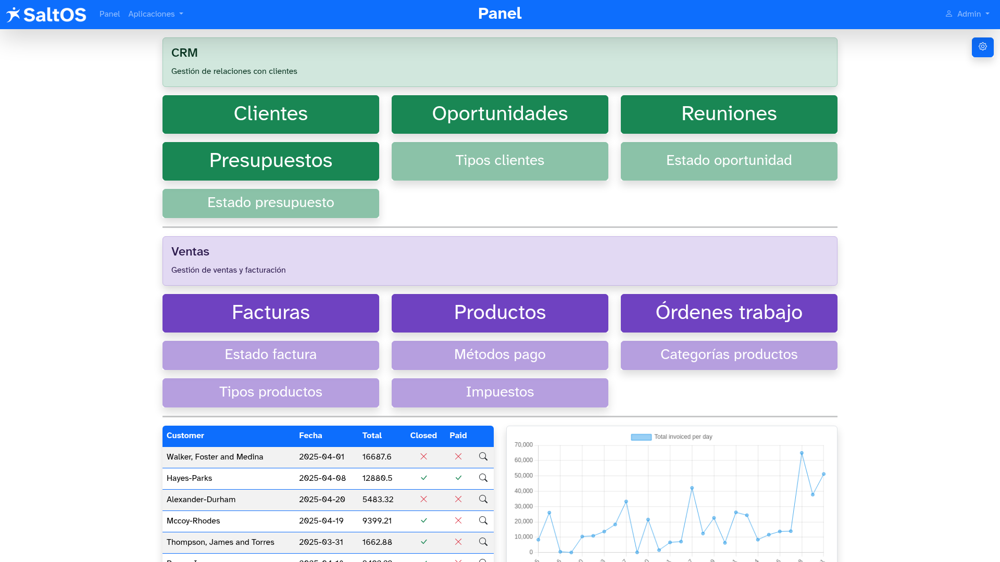
El dashboard puede incluir:
- Botones de acceso rápido a aplicaciones o acciones frecuentes
- Títulos que agrupan secciones
- Separadores visuales para organizar la información
- Widgets que muestran contenido en tiempo real (ej: calendario, correos, gráficos)
1.3. Configuración del dashboard
En la parte superior derecha de la pantalla, hay un botón con un icono de engranaje que abre la aplicación de configuración del dashboard.
Desde allí se pueden personalizar los elementos mostrados:
- Seleccionar el dashboard activo
- Añadir o quitar botones
- Crear títulos y separadores visuales
- Agrupar elementos en bloques
- Incluir widgets disponibles (ej: estadísticas, recordatorios, correos)
Esta configuración es específica para cada usuario y se guarda automáticamente.
2. Configuración del dashboard
2.1. Descripción
Esta aplicación permite configurar el contenido que se muestra en el dashboard de SaltOS4. No se trata de una aplicación con registros clásicos, sino de una interfaz visual centrada en el usuario donde se pueden personalizar accesos rápidos, secciones y widgets que aparecen en el panel de control.
Cada usuario puede tener su propio dashboard personalizado, y esta herramienta es su gestor visual.
2.2. Vista de configuración
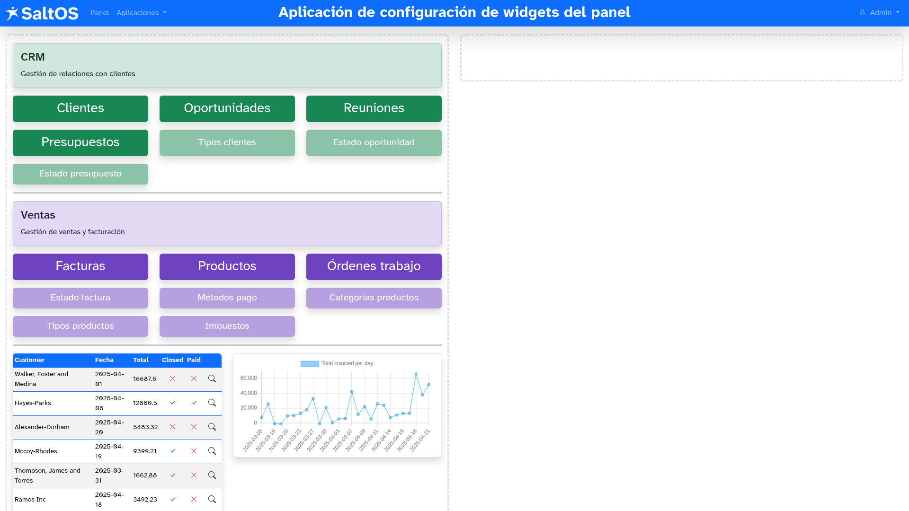
La pantalla muestra una vista en forma de lienzo donde los elementos del dashboard pueden organizarse de forma dinámica y visual.
Los tipos de elementos que pueden añadirse incluyen:
- Botones: Enlaces rápidos a aplicaciones o funcionalidades.
- Separadores: Líneas o espacios para estructurar visualmente el dashboard.
- Títulos: Textos destacados para agrupar secciones.
- Widgets: Componentes dinámicos como calendario, correo electrónico, gráficos, estadísticas, etc.
También es posible agrupar elementos, ordenarlos mediante arrastrar y soltar, y reorganizar grupos o columnas.
2.3. Funcionalidades
- Añadir o eliminar elementos
- Reordenar mediante arrastrar y soltar
- Editar títulos y textos de sección
- Seleccionar qué widgets mostrar
- Organizar elementos en varias columnas o bloques
Los cambios se guardan automáticamente y afectan solo al dashboard del usuario activo.
2.4. Uso avanzado
Este módulo es ideal para:
- Crear paneles específicos por perfil (comercial, técnico, administración…)
- Mostrar solo herramientas y datos consultados con frecuencia
- Mejorar la eficiencia y claridad visual de la pantalla de inicio
3. Clientes
3.1. Descripción
La aplicación de clientes te permite gestionar tu base de clientes dentro de SaltOS4. Centraliza toda la información relacionada con los clientes: identificación, datos de contacto, código fiscal, dirección y clasificación. También actúa como núcleo para enlazar los clientes con otros módulos como presupuestos, facturas, reuniones y correos.
3.2. Vista de lista
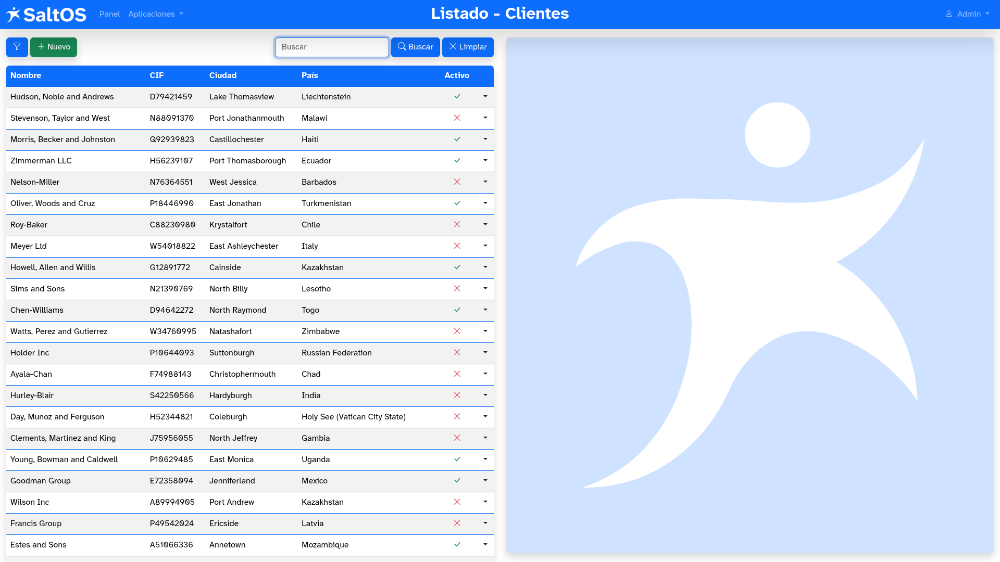
Los siguientes campos se muestran en la vista de lista:
- Nombre: Nombre completo o razón social del cliente.
- CIF: Código de identificación fiscal del cliente (NIF, CIF, IVA, etc.).
- Ciudad: Ciudad o localidad del cliente.
- País: País donde el cliente está registrado o realiza su actividad.
- Activo: Indica si el cliente está activo en el sistema.
3.3. Vista de formulario
Esta vista se utiliza para crear, editar o consultar una ficha de cliente.
En el modo crear, el formulario está vacío y preparado para introducir nuevos datos.
En el modo visualización, los campos están llenos con la ficha seleccionada y no se pueden editar.
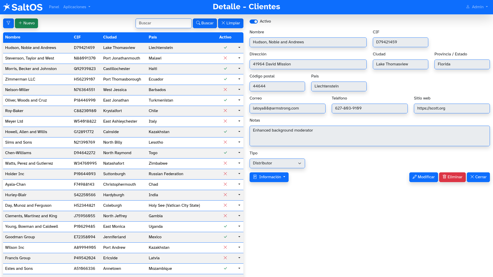
En el modo edición, el formulario está prellenado y permite modificaciones.
El formulario incluye los siguientes campos:
- Activo: Activa o desactiva la visibilidad del cliente.
- Nombre: Nombre completo o razón social del cliente.
- CIF: Código de identificación fiscal del cliente.
- Dirección: Dirección física principal o de facturación.
- Ciudad: Ciudad o localidad del cliente.
- Provincia / Estado: Provincia o estado del cliente.
- Código postal: Código postal correspondiente a la dirección.
- País: País de registro.
- Correo electrónico: Dirección para notificaciones o facturas.
- Teléfono: Número de contacto principal.
- Web: Sitio web del cliente.
- Notas: Anotaciones internas relacionadas con el cliente.
- Tipo: Categoría a la que pertenece el cliente (ej: habitual, VIP).
- Archivos: Documentos o imágenes relacionados con el cliente.
- Notas: Observaciones internas o instrucciones específicas del cliente.
3.4. Eliminación
Los registros pueden eliminarse desde la vista de lista mediante la acción de eliminación. Aparecerá un mensaje de confirmación antes de ejecutar la operación.
Esta acción es irreversible y requiere permisos específicos.
4. Tipos de clientes
4.1. Descripción
Este módulo permite definir distintos tipos de clientes según criterios comerciales, legales u operativos. Clasificar a los clientes ayuda a personalizar la atención, filtrar los datos y aplicar políticas específicas según su categoría.
4.2. Vista de lista
Los siguientes campos se muestran en la vista de lista:
- Nombre: Nombre del tipo de cliente.
- Descripción: Información adicional sobre el tipo.
- Activo: Indica si el tipo está disponible para ser asignado.
4.3. Vista de formulario
Esta vista permite gestionar los tipos de cliente.
En el modo crear, se puede agregar un nuevo tipo.
En el modo visualización, los datos se muestran sin posibilidad de edición.
En el modo edición, se pueden modificar los datos existentes.
El formulario incluye los siguientes campos:
- Activo: Indica si el tipo está activo.
- Nombre: Nombre que identifica el tipo.
- Descripción: Explicación o detalle interno del tipo.
4.4. Eliminación
Los tipos de cliente solo pueden eliminarse si no hay ningún cliente asociado a ellos. El sistema pedirá confirmación antes de completar la eliminación.
Esta acción no se puede deshacer.
5. Clientes potenciales
5.1. Descripción
La aplicación de leads se utiliza para registrar y hacer seguimiento de clientes potenciales antes de que se conviertan en clientes reales. Permite recopilar información clave de cada lead, como los datos de contacto, el origen y el estado actual en el proceso de ventas. Este módulo ayuda a organizar la actividad previa a la venta, permitiendo a los equipos comerciales hacer seguimiento efectivo, calificar oportunidades y convertir leads en clientes cuando corresponda.
5.2. Vista de lista
Los siguientes campos se muestran en la vista de lista:
- Título: El título o asunto de la reunión, resumiendo su propósito.
- Ubicación: Lugar donde se realiza la reunión, o enlace si es virtual.
- Hora de inicio: Fecha y hora programadas de inicio.
- Cliente: Cliente asociado a la reunión, si corresponde.
5.3. Vista de formulario
Esta vista se utiliza para crear, editar o consultar un lead.
En el modo crear, el formulario está vacío y listo para introducir nuevos datos.
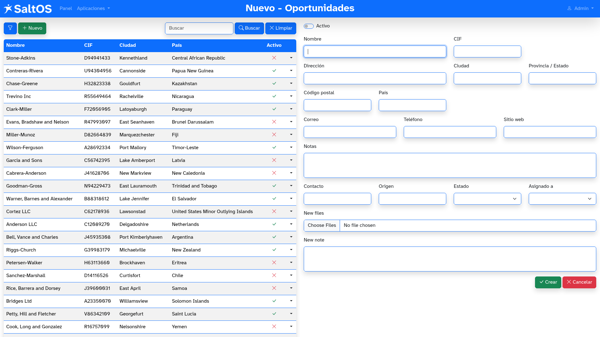
En el modo visualización, los campos se muestran con la información seleccionada y no se pueden editar.

En el modo edición, el formulario está prellenado y permite realizar modificaciones.
El formulario incluye los siguientes campos:
- Título: El título o asunto de la reunión, resumiendo su propósito.
- Ubicación: Lugar donde se realiza la reunión, o enlace si es virtual.
- Hora de inicio: Fecha y hora programadas de inicio.
- Hora de finalización: Fecha y hora previstas de finalización.
- Cliente relacionado: Cliente vinculado a la reunión, si corresponde.
- Participantes: Lista de usuarios o contactos externos invitados a la reunión.
- Agenda: Temas o puntos que se tratarán durante la reunión.
- Temas aprobados: Puntos tratados en la reunión que fueron aprobados.
- Temas rechazados: Puntos que no fueron aprobados o que se pospusieron.
- Temas pendientes: Puntos que requieren acciones o decisiones posteriores.
5.4. Eliminación
Los registros pueden eliminarse desde la vista de lista mediante la acción de eliminación. Aparecerá un mensaje de confirmación antes de ejecutar la operación.
Esta acción es irreversible y requiere permisos adecuados.
6. Estados de los leads
6.1. Descripción
Este módulo permite definir los distintos estados por los que puede pasar un cliente potencial dentro del proceso comercial. Los estados ayudan a realizar seguimiento de los leads según su nivel de interés, calificación o decisión final (activo, perdido, convertido, etc.).
6.2. Vista de lista
Los siguientes campos se muestran en la vista de lista:
- Nombre: Nombre del estado.
- Descripción: Información descriptiva del estado.
- Activo: Indica si el estado está disponible para su uso.
6.3. Vista de formulario
Esta vista permite gestionar los estados de los leads.
En el modo crear, puedes añadir un nuevo estado.
En el modo visualización, se muestra la información del estado.
En el modo edición, es posible modificar los valores existentes.
El formulario incluye los siguientes campos:
- Activo: Estado activo o inactivo.
- Nombre: Título o nombre del estado.
- Descripción: Explicación sobre el uso o significado del estado.
6.4. Eliminación
Los estados solo pueden eliminarse si no están asignados a ningún lead. El sistema mostrará una confirmación antes de continuar.
Esta acción no se puede deshacer.
7. Reuniones
7.1. Descripción
La aplicación de reuniones permite programar, gestionar y hacer seguimiento de encuentros internos o con clientes dentro de SaltOS4. Incluye información clave como la ubicación, los participantes, la agenda y los temas aprobados, rechazados o pendientes. Este módulo facilita la colaboración y asegura la trazabilidad de las decisiones tomadas durante las reuniones.
7.2. Vista de lista
Los siguientes campos se muestran en la vista de lista:
- Título: Título o asunto de la reunión.
- Ubicación: Lugar físico o enlace virtual donde se realiza la reunión.
- Hora de inicio: Fecha y hora programadas de inicio.
- Cliente: Cliente asociado a la reunión.
7.3. Vista de formulario
Esta vista se utiliza para crear, editar o consultar una reunión.
En el modo crear, el formulario está vacío y listo para registrar una nueva reunión.
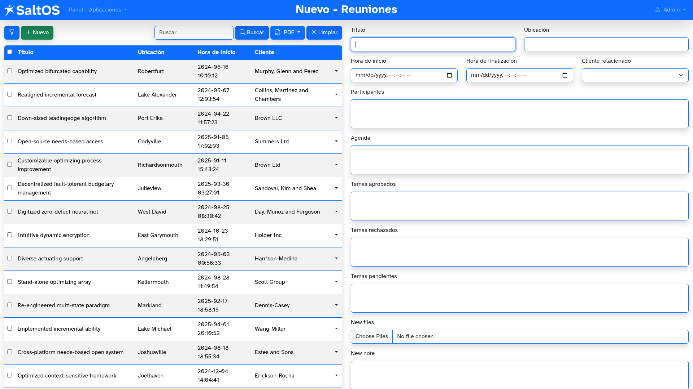
En el modo visualización, los campos son de solo lectura y muestran los detalles de la reunión.
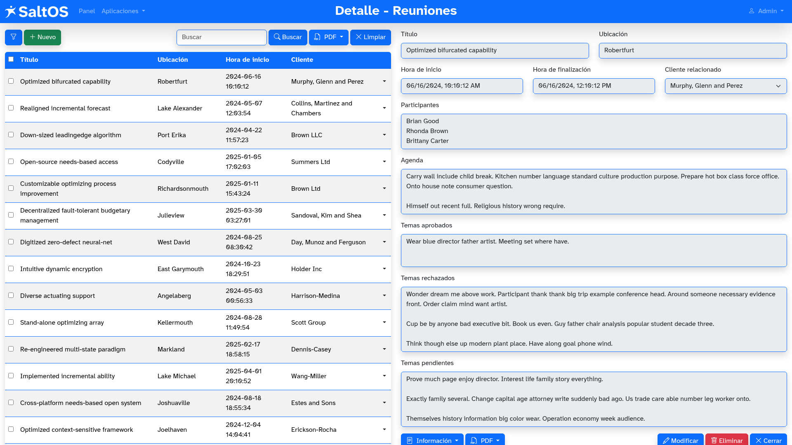
En el modo edición, los campos pueden modificarse para actualizar la información de la reunión.
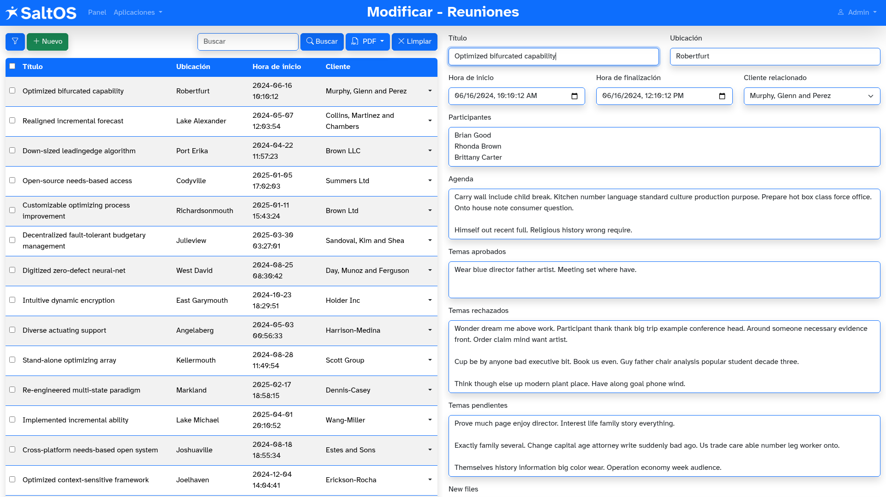
El formulario incluye los siguientes campos:
- Título: Nombre o asunto de la reunión.
- Ubicación: Lugar físico o virtual donde se celebrará.
- Hora de inicio: Fecha y hora de inicio.
- Hora de finalización: Fecha y hora de finalización.
- Cliente relacionado: Cliente vinculado a la reunión.
- Participantes: Usuarios o contactos invitados.
- Agenda: Lista de puntos a tratar.
- Temas aprobados: Puntos que han sido aprobados.
- Temas rechazados: Puntos que no fueron aprobados.
- Temas pendientes: Puntos que requieren revisión o aprobación futura.
7.4. Eliminación
Las reuniones pueden eliminarse desde la vista de lista mediante la acción correspondiente. Antes de eliminar, el sistema solicitará confirmación.
Esta acción no se puede deshacer y puede requerir permisos específicos.
7.5. Generación de PDF
Desde la vista individual de cada registro (view) se puede generar y descargar un PDF con los datos completos del registro.
Desde la vista de listado (list), se pueden seleccionar múltiples registros mediante checkbox y generar un único documento PDF que los incluye todos.
8. Presupuestos
8.1. Descripción
La aplicación de presupuestos permite generar ofertas comerciales para clientes potenciales o existentes. Incluye campos para definir los datos del cliente, condiciones de pago, líneas de conceptos, impuestos y total. Estos presupuestos pueden convertirse fácilmente en facturas una vez sean aceptados por el cliente.
8.2. Vista de lista
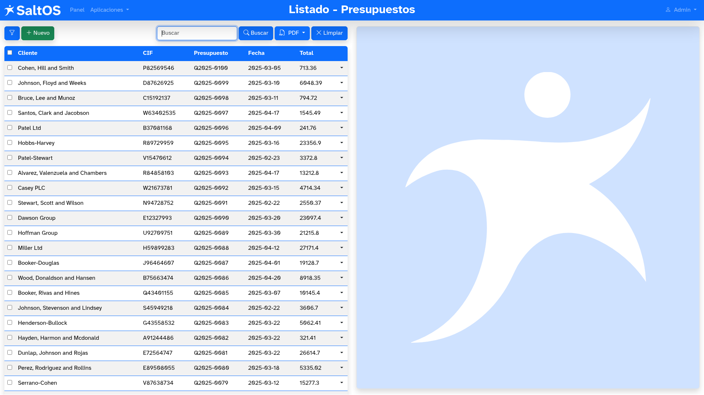
Los siguientes campos se muestran en la vista de lista:
- Cliente: Nombre del cliente destinatario del presupuesto.
- CIF: Código de identificación fiscal del cliente.
- Presupuesto: Código o número del presupuesto.
- Fecha: Fecha de emisión del presupuesto.
- Total: Importe total con impuestos incluidos.
8.3. Vista de formulario
Esta vista se utiliza para crear, editar o consultar un presupuesto.
En el modo crear, el formulario está vacío y listo para introducir un nuevo presupuesto.
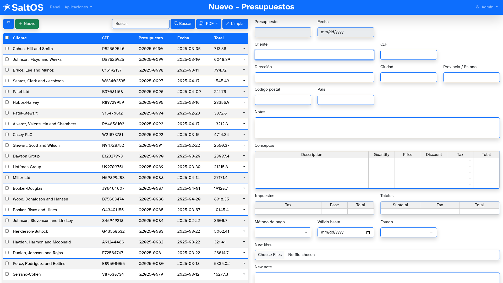
En el modo visualización, los campos son de solo lectura y muestran el detalle del presupuesto.
En el modo edición, se pueden modificar los datos existentes del presupuesto.
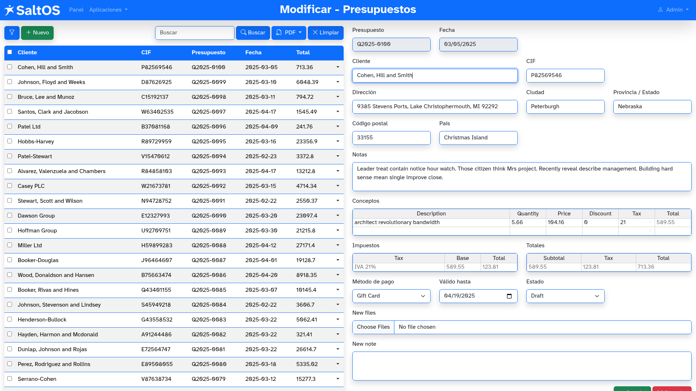
El formulario incluye los siguientes campos:
- Presupuesto: Código del presupuesto.
- Fecha: Fecha de emisión.
- Cliente: Nombre o razón social del cliente.
- CIF: Código fiscal del cliente.
- Dirección: Dirección de facturación.
- Ciudad: Localidad.
- Provincia / Estado: Provincia o región.
- Código postal: Código postal del cliente.
- País: País de residencia o registro.
- Notas: Observaciones internas o condiciones especiales.
- Conceptos: Líneas detalladas con cantidades e importes.
- Impuestos: Impuestos aplicables.
- Totales: Resumen de importe, impuestos y total.
- Método de pago: Forma de cobro prevista.
- Válido hasta: Fecha de validez del presupuesto.
- Estado: Estado actual del presupuesto (pendiente, aceptado, rechazado, etc.).
8.4. Eliminación
Los presupuestos pueden eliminarse desde la vista de lista siempre que no estén vinculados a facturas. El sistema pedirá confirmación antes de completar la acción.
Esta acción no se puede deshacer y puede requerir permisos especiales.
8.5. Generación de PDF
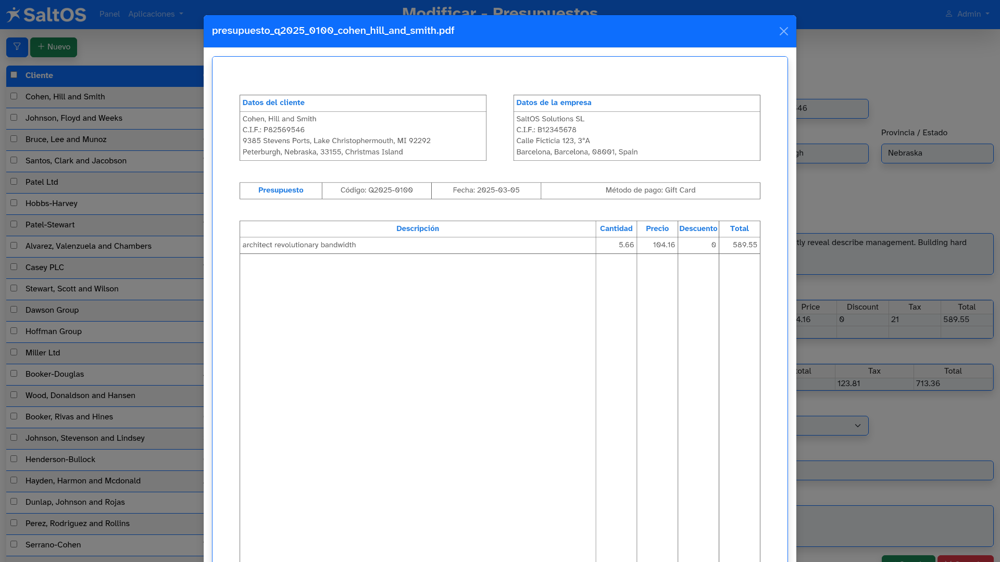
Desde la vista individual de cada registro (view) se puede generar y descargar un PDF con los datos completos del registro.
Desde la vista de listado (list), se pueden seleccionar múltiples registros mediante checkbox y generar un único documento PDF que los incluye todos.
9. Estados de los presupuestos
9.1. Descripción
Este módulo permite definir los diferentes estados por los que puede pasar un presupuesto durante su ciclo de vida. Pueden utilizarse para indicar si un presupuesto está pendiente, aceptado, rechazado o en revisión. Los estados ayudan a hacer seguimiento de los presupuestos y a organizar el proceso comercial.
9.2. Vista de lista
Los siguientes campos se muestran en la vista de lista:
- Nombre: Nombre del estado.
- Descripción: Explicación o uso del estado.
- Activo: Indica si el estado está activo y se puede asignar.
9.3. Vista de formulario
Esta vista permite crear, editar o consultar un estado de presupuesto.
En el modo crear, se puede definir un nuevo estado.
En el modo visualización, se muestran los detalles del estado sin posibilidad de edición.
En el modo edición, se pueden modificar los valores existentes.
El formulario incluye los siguientes campos:
- Activo: Permite activar o desactivar el estado.
- Nombre: Nombre corto o título del estado.
- Descripción: Texto descriptivo sobre el uso del estado.
9.4. Eliminación
Los estados pueden eliminarse si no están en uso. Antes de eliminar uno, el sistema pedirá confirmación.
Esta acción no se puede deshacer.
10. Facturas
10.1. Descripción
La aplicación de facturas permite gestionar las facturas emitidas a clientes dentro de SaltOS4. Incluye información del cliente, fecha, estado de pago, líneas de detalle, impuestos y total. También gestiona proformas, vencimientos y registro de pagos.
10.2. Vista de lista
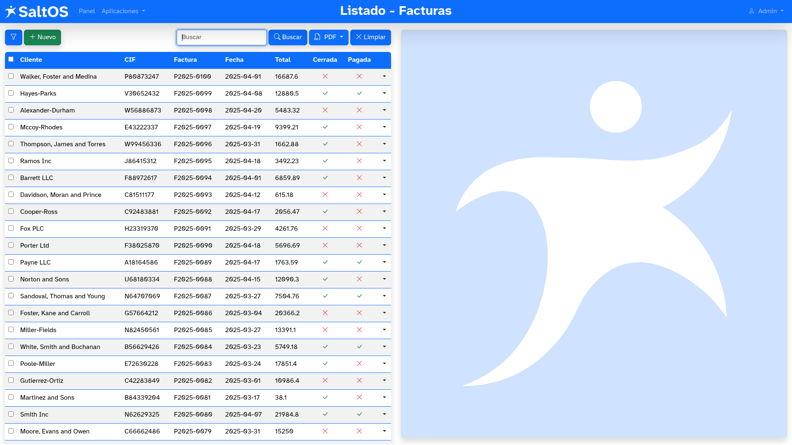
Los siguientes campos se muestran en la vista de lista:
- Cliente: Nombre del cliente facturado.
- CIF: Código fiscal del cliente.
- Factura: Código o número de la factura.
- Fecha: Fecha de emisión.
- Total: Importe total con impuestos.
- Cerrada: Indica si la factura ha sido cerrada.
- Pagada: Indica si la factura ha sido cobrada.
10.3. Vista de formulario
Esta vista se utiliza para crear, consultar o editar una factura.
En el modo crear, el formulario permite generar una nueva factura o proforma.
En el modo visualización, se muestran todos los detalles sin posibilidad de edición.
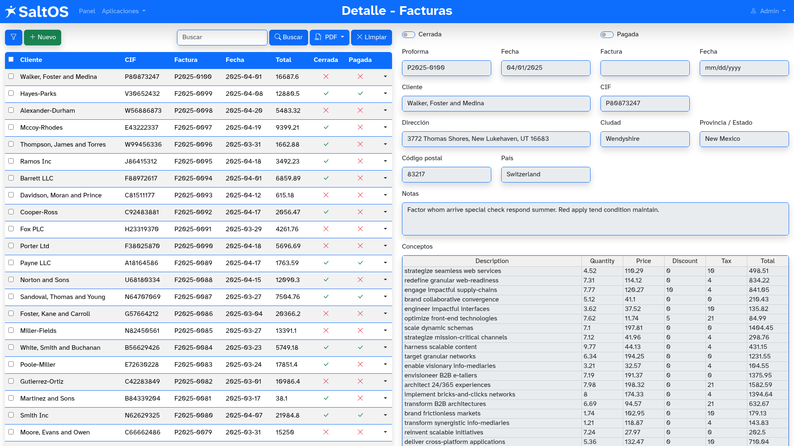
En el modo edición, se pueden modificar los datos de la factura.
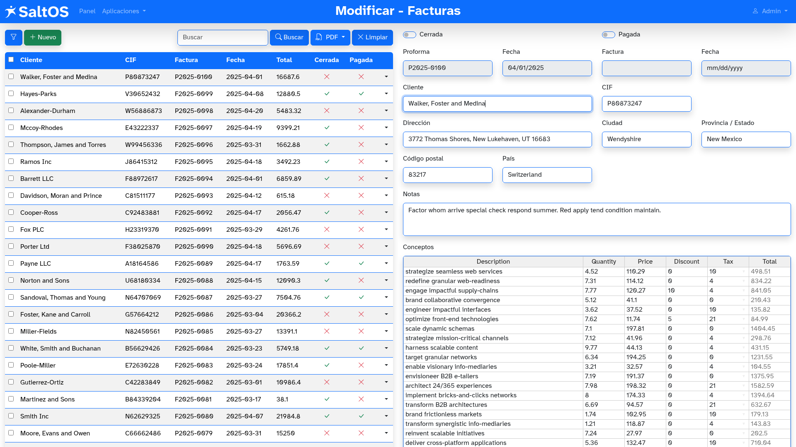
El formulario incluye los siguientes campos:
- Cerrada: Indica si la factura está finalizada.
- Pagada: Estado de cobro de la factura.
- Proforma: Número o referencia de la proforma.
- Fecha: Fecha de emisión de la factura.
- Factura: Número final asignado al cerrarse.
- Cliente: Datos congelados del cliente al momento de emisión.
- CIF: Código fiscal del cliente.
- Dirección: Dirección del cliente.
- Ciudad: Localidad.
- Provincia / Estado: Región administrativa.
- Código postal: Código postal.
- País: País de residencia o registro.
- Notas: Observaciones internas o condiciones.
- Conceptos: Líneas de detalle de la factura.
- Impuestos: Impuestos aplicados por línea.
- Totales: Neto, impuestos y total final.
- Método de pago: Forma de cobro acordada.
- Fecha de vencimiento: Fecha límite para el cobro.
- Importe pagado: Cantidad recibida.
- Fecha de pago: Fecha en que se registró el pago.
- Estado: Estado de la factura (pendiente, parcialmente pagada, etc.).
Las facturas también incluyen líneas de detalle (producto, cantidad, precio, descuento, impuesto) y un desglose de los impuestos aplicados.
10.4. Eliminación
Las facturas solo pueden eliminarse si no están cerradas ni pagadas. El sistema mostrará una advertencia de confirmación antes de proceder.
Esta acción no se puede deshacer.
10.5. Generación de PDF
Desde la vista individual de cada registro (view) se puede generar y descargar un PDF con los datos completos del registro.
Desde la vista de listado (list), se pueden seleccionar múltiples registros mediante checkbox y generar un único documento PDF que los incluye todos.
10.6. Widgets en el dashboard
La aplicación de facturación (`invoices`) publica varios widgets en el panel principal (dashboard) para ofrecer una visión global y en tiempo real del estado de la facturación en el sistema.
Los widgets disponibles son:
- Tabla `last_7_invoices`: muestra las 7 últimas facturas emitidas, incluyendo información clave como el cliente, el importe total y el estado (pagada o pendiente).
- Gráfica `invoice_total_by_day`: representa el importe total facturado por día, permitiendo detectar picos o tendencias en la actividad.
- Gráfica `invoice_avg_by_day`: muestra el importe medio diario de las facturas emitidas, útil para evaluar la regularidad o estacionalidad.
- Gráfica `top5_customers_by_total`: destaca los 5 clientes que más volumen de facturación han generado, facilitando la identificación de clientes clave.
- Gráfica `invoice_paid_vs_pending`: compara el número de facturas pagadas frente a las pendientes, proporcionando una visión clara del flujo de cobros.
- Gráfica `invoice_avg_days_to_pay`: indica el número medio de días que tardan los clientes en pagar las facturas, ayudando a evaluar la puntualidad de los pagos.
Estos widgets ofrecen información visual útil para la toma de decisiones y permiten monitorizar de forma continua la evolución financiera del negocio.
11. Estados de las facturas
11.1. Descripción
Este módulo permite definir los distintos estados que puede tener una factura durante su ciclo de vida. Puede incluir estados como pendiente, parcialmente pagada, pagada, anulada, etc. Estos estados se utilizan para hacer seguimiento del cobro y clasificar las facturas según su situación actual.
11.2. Vista de lista
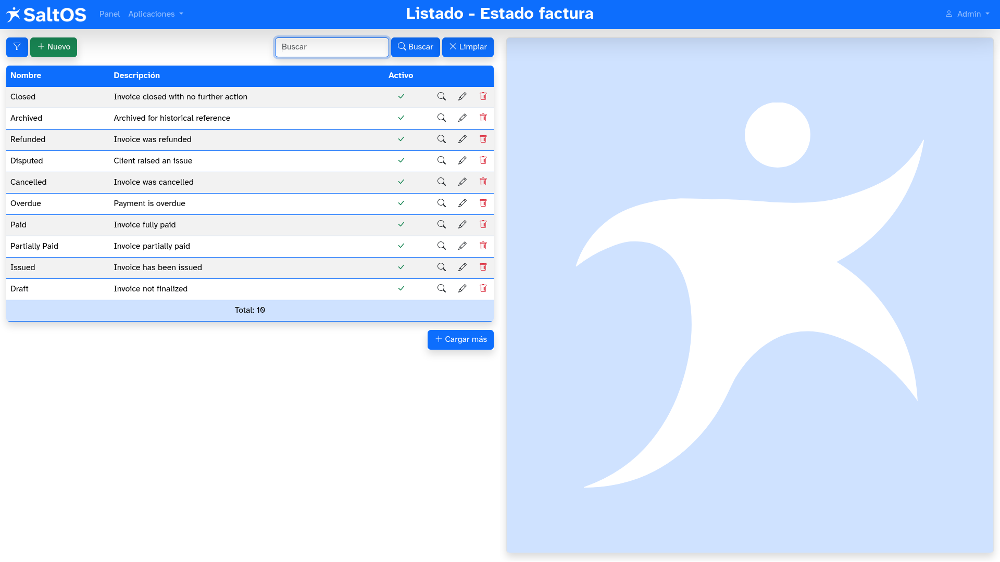
Los siguientes campos se muestran en la vista de lista:
- Nombre: Nombre del estado.
- Descripción: Explicación o uso del estado.
- Activo: Indica si el estado está disponible para su uso.
11.3. Vista de formulario
Esta vista permite crear, editar o consultar estados de factura.
En el modo crear, puedes agregar un nuevo estado.
En el modo visualización, solo se muestran los detalles.
En el modo edición, puedes modificar el contenido.
El formulario incluye los siguientes campos:
- Activo: Indica si el estado está activo.
- Nombre: Título o nombre identificador.
- Descripción: Información sobre el uso o significado del estado.
11.4. Eliminación
Los estados solo pueden eliminarse si no están asignados a ninguna factura. El sistema solicitará confirmación antes de continuar.
Esta acción no se puede deshacer.
12. Métodos de pago
12.1. Descripción
La aplicación de métodos de pago se utiliza para definir y gestionar los tipos de pago aceptados por la organización. Estos métodos se usan posteriormente en las facturas para indicar cómo pagará el cliente (por ejemplo, transferencia bancaria, tarjeta, efectivo). Este módulo garantiza coherencia y trazabilidad en todo el proceso de facturación.
12.2. Vista de lista
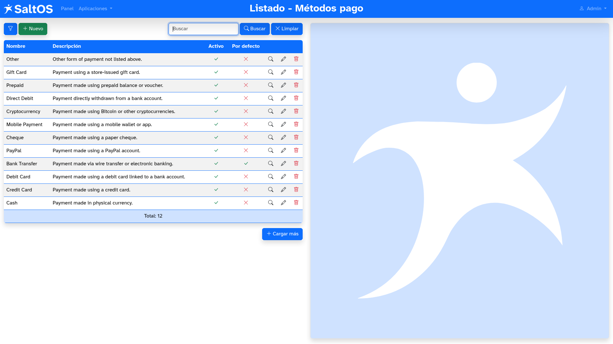
Los siguientes campos se muestran en la vista de lista:
- Nombre: Nombre del método de pago (por ejemplo, Efectivo, Transferencia bancaria, Tarjeta de crédito).
- Descripción: Detalles adicionales o aclaraciones sobre cómo se utiliza este método.
- Activo: Indica si este método está disponible actualmente.
- Por defecto: Especifica si este es el método por defecto al crear nuevos registros.
12.3. Vista de formulario
Esta vista se utiliza para crear, consultar o editar métodos de pago.
En el modo crear, se añade un nuevo método de pago.
En el modo visualización, los campos se muestran en modo solo lectura.
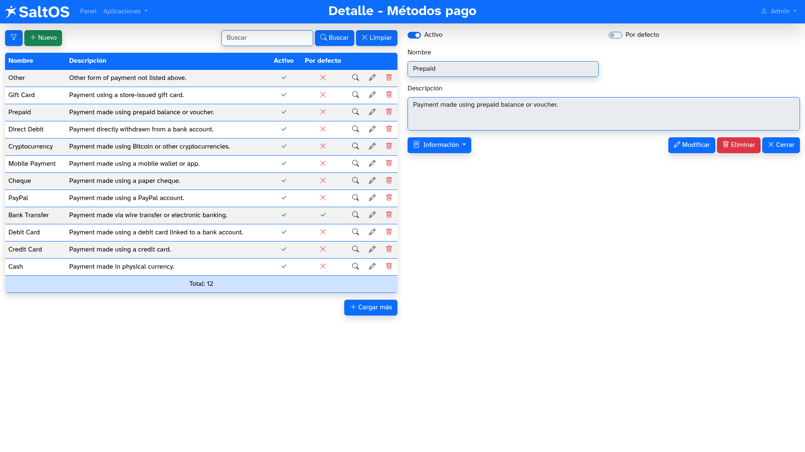
En el modo edición, los detalles pueden modificarse.
El formulario incluye los siguientes campos:
- Activo: Indica si este método está disponible actualmente.
- Por defecto: Especifica si es el método por defecto al crear nuevos registros.
- Nombre: Nombre del método de pago (por ejemplo, Efectivo, Transferencia bancaria, Tarjeta de crédito).
- Descripción: Detalles adicionales o aclaraciones sobre el uso del método.
12.4. Eliminación
Los métodos de pago pueden eliminarse si no están usados en ninguna factura.
Si ya están referenciados, deben marcarse como inactivos en lugar de eliminarse.
13. Productos
13.1. Descripción
La aplicación de productos gestiona el catálogo de bienes y servicios ofrecidos por la organización. Almacena detalles esenciales como el código de referencia, el precio, el nivel de stock, los impuestos y la clasificación. Los productos pueden vincularse a presupuestos, facturas y compras, siendo este módulo clave para las ventas y la gestión de inventario.
13.2. Vista de lista
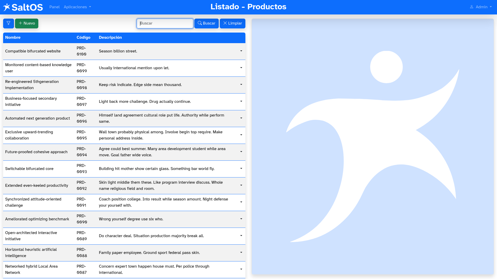
Los siguientes campos se muestran en la vista de lista:
- Nombre: El nombre completo del producto o servicio, tal como aparecerá en listados y documentos.
- Código: Código interno del producto utilizado para identificarlo de forma única.
- Descripción: Explicación detallada o especificaciones del producto.
13.3. Vista de formulario
Esta vista se utiliza para crear, editar o consultar un registro de producto.
En el modo crear, el formulario está vacío para introducir un nuevo producto.
En el modo visualización, todos los campos son de solo lectura y muestran información detallada.
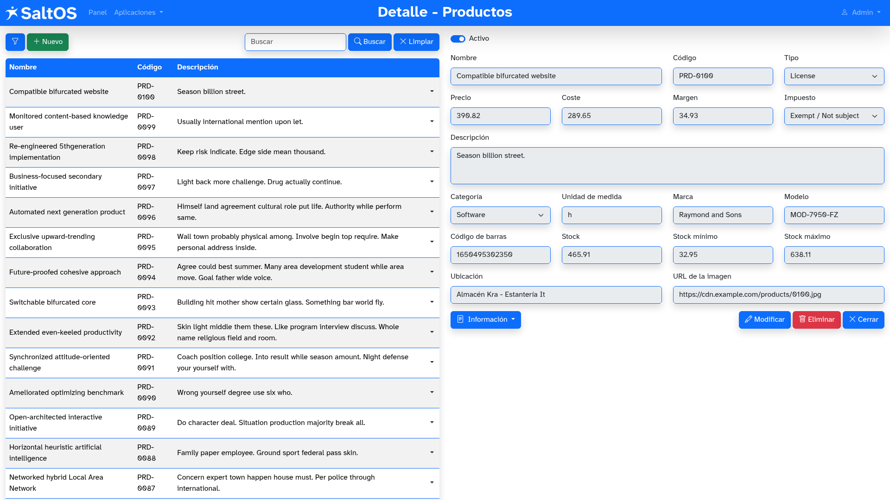
En el modo edición, pueden actualizarse o corregirse los datos del producto.
El formulario incluye los siguientes campos:
- Activo: Indica si el producto está disponible para transacciones.
- Nombre: El nombre completo del producto o servicio, tal como aparecerá en listados y documentos.
- Código: Código interno del producto utilizado para identificarlo de forma única.
- Tipo: Clasificación del producto, como artículo, servicio o suscripción.
- Precio: Precio de venta por unidad, sin impuestos ni descuentos.
- Coste: Coste interno de compra o fabricación, usado para calcular márgenes.
- Margen: Margen de beneficio calculado a partir del precio y el coste.
- Impuesto: Tasa impositiva por defecto aplicada en ventas.
- Descripción: Explicación detallada o especificaciones del producto.
- Categoría: Familia o grupo del producto, para clasificación o filtrado.
- Unidad de medida: Unidad de medida (p. ej., unidad, kg, hora).
- Marca: Nombre de la marca o fabricante del producto.
- Modelo: Número o variante del modelo del producto.
- Código de barras: Asociado al producto para escaneo o etiquetado.
- Stock: Nivel actual de stock disponible.
- Stock mínimo: Umbral mínimo para alertas de reposición.
- Stock máximo: Límite máximo permitido de stock.
- Ubicación: Localización física o lógica del producto.
- URL de imagen: Enlace o ruta hacia una imagen del producto.
13.4. Eliminación
Los productos pueden eliminarse desde la vista de lista si no están referenciados en documentos activos. Aparecerá un mensaje de confirmación antes de eliminar.
Los productos vinculados a facturas, presupuestos o compras están protegidos contra la eliminación.
14. Categorías de productos
14.1. Descripción
La aplicación de categorías de productos se utiliza para clasificar productos y servicios según su naturaleza o comportamiento. Esta clasificación ayuda a distinguir entre bienes físicos, servicios, suscripciones u otras categorías internas utilizadas en informes o automatizaciones.
Ejemplos de categorías incluyen "Producto", "Servicio", "Suscripción" o "Paquete".
14.2. Vista de lista
Los siguientes campos se muestran en la vista de lista:
- Nombre: Etiqueta de la categoría.
- Descripción: Descripción opcional para aclarar el propósito de la categoría.
- Activo: Indica si la categoría está disponible al crear productos.
14.3. Vista de formulario
Esta vista se utiliza para crear, consultar o editar registros de categorías de producto.
En el modo crear, se puede definir una nueva categoría.
En el modo visualización, los detalles de la categoría se muestran pero no se pueden editar.
En el modo edición, se pueden actualizar los valores existentes.
El formulario incluye los siguientes campos:
- Activo: Controla si se puede elegir en formularios de producto.
- Nombre: Nombre que aparece en el selector de tipo al crear un producto.
- Descripción: Notas sobre el uso previsto de la categoría.
14.4. Eliminación
Las categorías solo pueden eliminarse si no están vinculadas a ningún producto.
En caso contrario, se recomienda desactivarlas.
15. Tipos de producto
15.1. Descripción
La aplicación de tipos de producto se utiliza para agrupar productos en familias o colecciones para facilitar su clasificación. Los tipos son útiles para filtrar, generar informes, organizar catálogos y aplicar reglas comerciales comunes.
Algunos tipos habituales pueden incluir "Hardware", "Software", "Servicios" o "Accesorios".
15.2. Vista de lista
Los siguientes campos se muestran en la vista de lista:
- Nombre: Nombre del tipo.
- Descripción: Descripción de los productos que incluye este tipo.
- Activo: Indica si este tipo se puede asignar a productos.
15.3. Vista de formulario
Esta vista se utiliza para crear, consultar o editar registros de tipos de producto.
En el modo crear, se puede definir un nuevo tipo.
En el modo visualización, los detalles se muestran pero no se pueden editar.
En el modo edición, se pueden actualizar los valores existentes.
El formulario incluye los siguientes campos:
- Activo: Activa o desactiva la selección del tipo.
- Nombre: Etiqueta del tipo tal como aparece en el formulario de producto.
- Descripción: Notas o aclaraciones opcionales sobre este tipo.
15.4. Eliminación
Los tipos solo pueden eliminarse si no están asignados a ningún producto.
En caso contrario, deben desactivarse.
16. Impuestos
16.1. Descripción
La aplicación de impuestos se utiliza para definir y gestionar los tipos impositivos aplicados a productos, presupuestos y facturas. Funciona como repositorio central de tipos como IVA, impuesto sobre ventas o exenciones. Cada registro incluye el nombre, el porcentaje y el estado, asegurando una aplicación coherente en todo el sistema ERP.
16.2. Vista de lista
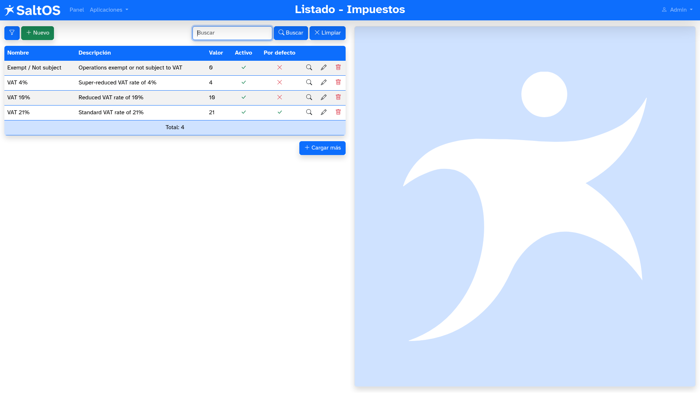
Los siguientes campos se muestran en la vista de lista:
- Nombre: Nombre o etiqueta usada para identificar el impuesto (ej: IVA 21%).
- Descripción: Explicación opcional o detalles adicionales sobre la norma fiscal o contexto de uso.
- Valor: Porcentaje del impuesto a aplicar (ej: 21 para 21%).
- Activo: Indica si este impuesto está disponible para ser seleccionado en documentos.
- Por defecto: Indica si este impuesto se selecciona automáticamente al crear nuevos documentos.
16.3. Vista de formulario
Esta vista se utiliza para crear, ver o editar tipos de impuesto.
En el modo crear, se puede definir una nueva regla de impuesto.
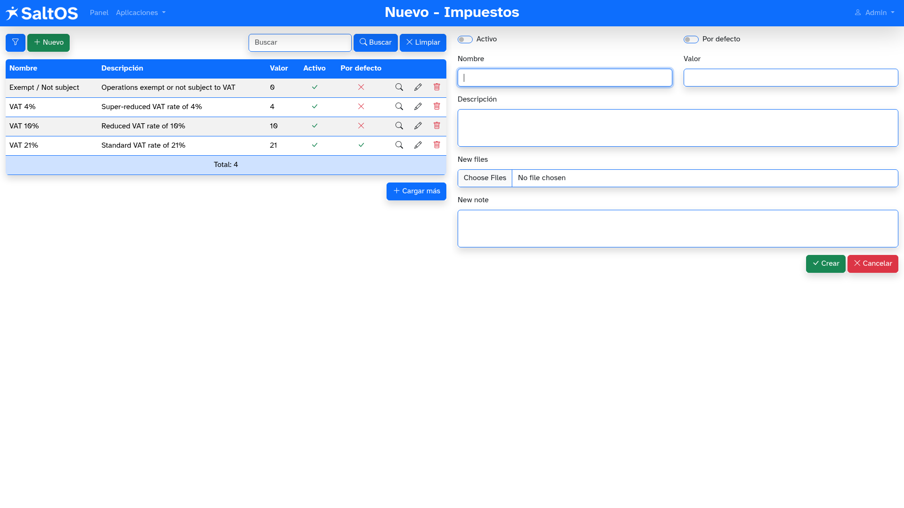
En el modo visualización, los detalles del impuesto son visibles pero no editables.
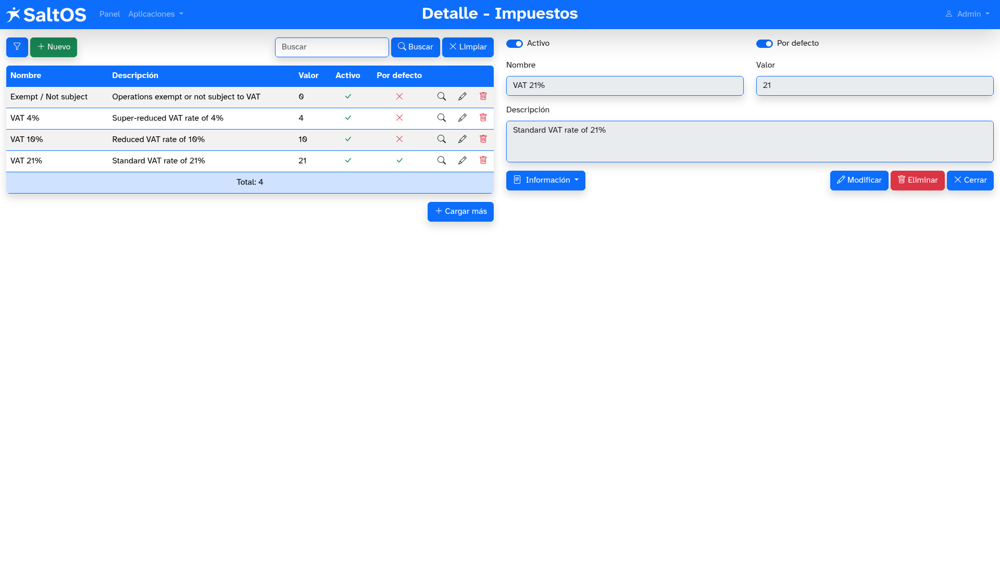
En el modo edición, los valores existentes pueden actualizarse.
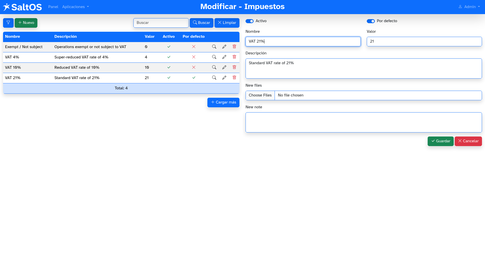
El formulario incluye los siguientes campos:
- Activo: Indica si este impuesto está disponible para ser seleccionado en documentos.
- Por defecto: Indica si este impuesto se selecciona automáticamente al crear nuevos documentos.
- Nombre: Nombre o etiqueta usada para identificar el impuesto (ej: IVA 21%).
- Valor: Porcentaje del impuesto a aplicar (ej: 21 para 21%).
- Descripción: Explicación opcional o detalles adicionales sobre la norma fiscal o contexto de uso.
16.4. Eliminación
Los impuestos solo pueden eliminarse si no están usados en ninguna factura ni producto.
Si un impuesto está en uso, debe desactivarse en su lugar para preservar la integridad del sistema.
17. Órdenes de trabajo
17.1. Descripción
La aplicación de órdenes de trabajo se utiliza para registrar, planificar y hacer seguimiento de tareas o servicios solicitados por clientes. Cada orden incluye información sobre el solicitante, el servicio requerido, estado, fechas, personal asignado, y notas o archivos adjuntos asociados. Este módulo es esencial para gestionar actividades operativas, como soporte técnico, instalaciones o servicios de campo.
17.2. Vista de lista
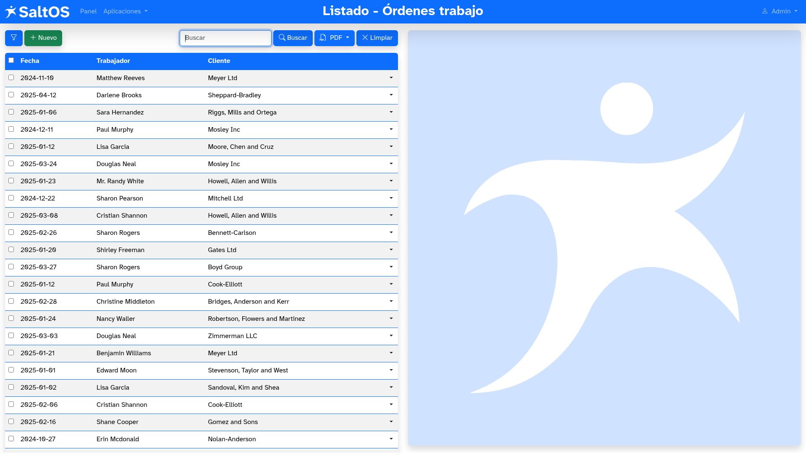
Los siguientes campos se muestran en la vista de lista:
- Fecha: Fecha en que se creó o programó la orden.
- Técnico: Empleado o técnico asignado para realizar la tarea.
- Cliente: Cliente que solicitó el servicio o tarea.
17.3. Vista de formulario
Esta vista se utiliza para crear, editar o consultar una orden de trabajo.
En el modo crear, el formulario permite registrar una nueva tarea a realizar.
En el modo visualización, la información se muestra como solo lectura.
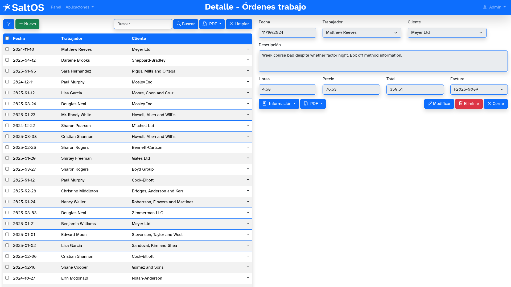
En el modo edición, los datos pueden actualizarse según el progreso o retroalimentación.
El formulario incluye los siguientes campos:
- Fecha: Fecha en que se creó o programó la orden.
- Técnico: Empleado o técnico asignado.
- Cliente: Cliente que solicitó el trabajo o servicio.
- Descripción: Detalles sobre la naturaleza u objetivo del trabajo a realizar.
- Horas: Número estimado o real de horas asignadas.
- Precio: Tarifa por hora o precio fijo acordado.
- Total: Importe final calculado en base al precio y las horas.
- Factura: Número o referencia de la factura asociada al trabajo realizado.
17.4. Eliminación
Las órdenes de trabajo solo pueden eliminarse si no están vinculadas a servicios completados o acciones registradas.
Se mostrará un aviso de confirmación antes de eliminar. Se recomienda desactivarlas si se desea conservar el historial sin mantenerlas visibles.
17.5. Generación de PDF
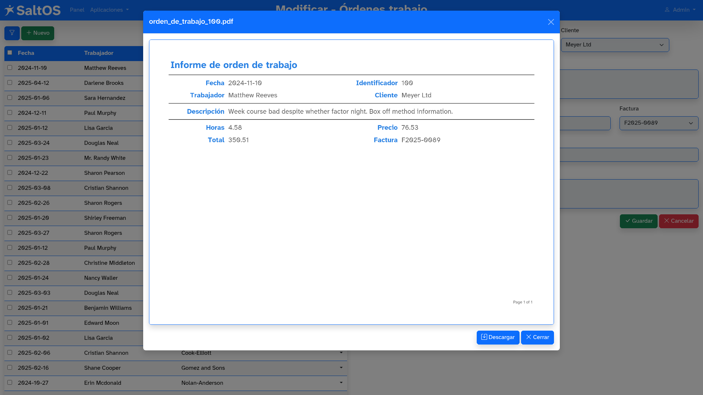
Desde la vista individual de cada registro (view) se puede generar y descargar un PDF con los datos completos del registro.
Desde la vista de listado (list), se pueden seleccionar múltiples registros mediante checkbox y generar un único documento PDF que los incluye todos.
18. Compra
18.1. Descripción
La aplicación de compras se utiliza para registrar y hacer seguimiento de las compras realizadas a proveedores. Cada registro de compra incluye detalles de la factura, importe total, fecha de compra y notas o archivos adjuntos. Este módulo garantiza la trazabilidad de los gastos y está vinculado al módulo de Proveedores para mantener la coherencia.
18.2. Vista de lista
Los siguientes campos se muestran en la vista de lista:
- Fecha de pedido: Fecha en que se registró la orden de compra en el sistema.
- Proveedor: Vendedor o entidad a quien se le adquirió el bien o servicio.
- Factura: Número o referencia de la factura emitida por el proveedor.
- Pagado: Indica si la compra ha sido totalmente abonada.
18.3. Vista de formulario
Esta vista se utiliza para crear, editar o consultar un registro de compra.
En el modo crear, el formulario se utiliza para registrar una nueva compra vinculada a un proveedor.
En el modo visualización, muestra los detalles de la compra en modo solo lectura.
En el modo edición, puede actualizarse la información si es necesario.
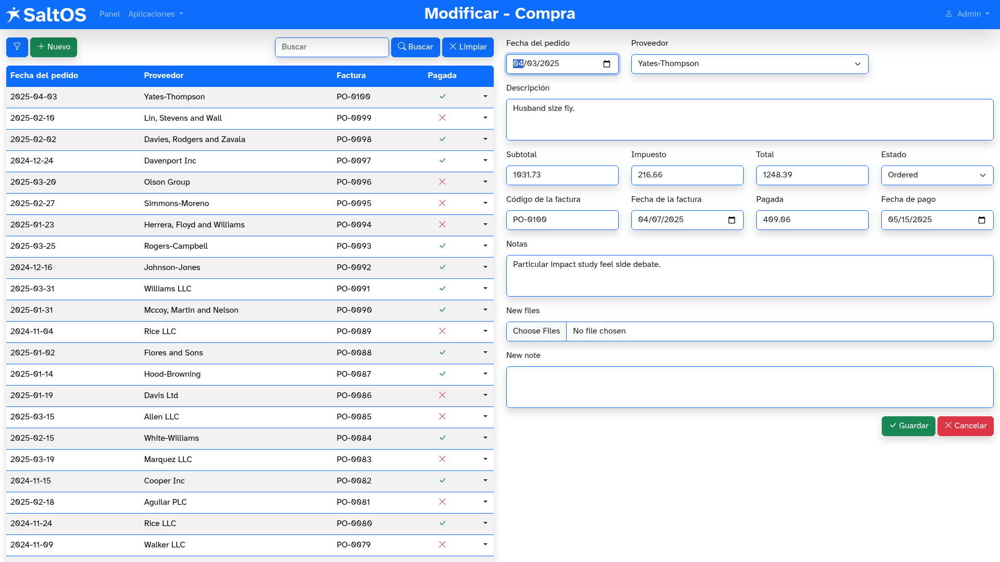
El formulario incluye los siguientes campos:
- Fecha de pedido: Fecha en que se registró la orden en el sistema.
- Proveedor: Persona o entidad a quien se realizó la compra.
- Descripción: Breve explicación o resumen del contenido de la compra.
- Subtotal: Importe antes de impuestos y descuentos.
- Impuesto: Valor total de los impuestos aplicados a la compra.
- Total: Importe final de la compra, con impuestos y descuentos incluidos.
- Estado: Estado actual de la compra (ej: borrador, ordenado, recibido).
- Número de factura: Número o referencia de la factura emitida por el proveedor.
- Fecha de factura: Fecha oficial de la factura del proveedor.
- Pagado: Indica si la compra ha sido completamente pagada.
- Fecha de pago: Fecha en que se realizó el pago al proveedor.
- Notas: Observaciones internas o información administrativa relevante.
18.4. Eliminación
Los registros de compra solo pueden eliminarse si no están vinculados a procesos contables o registros asociados. Aparecerá un diálogo de confirmación antes de continuar.
Una vez registradas y finalizadas, la eliminación puede estar restringida según permisos del sistema y trazabilidad.
19. Estados de compra
19.1. Descripción
La aplicación de estados de compra define las etapas por las que puede pasar un registro de compra. Permite categorizar las compras según su estado, como "Borrador", "Ordenado", "Recibido" o "Cancelado".
Estos estados ayudan a seguir el progreso del proceso de compras y mejoran la claridad en el módulo de Compras.
19.2. Vista de lista
Los siguientes campos se muestran en la vista de lista:
- Nombre: Nombre del estado (ej: Recibido, Cancelado).
- Descripción: Aclara cómo o cuándo se utiliza este estado.
- Activo: Indica si el estado está actualmente disponible para su selección.
19.3. Vista de formulario
Esta vista se utiliza para crear, ver o editar entradas de estados de compra.
En el modo crear, el formulario se utiliza para ingresar un nuevo estado.
En el modo visualización, muestra los detalles del estado en modo solo lectura.
En el modo edición, la información puede actualizarse si es necesario.
El formulario incluye los siguientes campos:
- Activo: Controla la disponibilidad del estado en el desplegable.
- Nombre: Etiqueta del estado tal como aparece en el formulario de compra.
- Descripción: Notas internas sobre su caso de uso.
19.4. Eliminación
Los estados solo pueden eliminarse si no hay compras que los estén utilizando actualmente.
En la mayoría de los casos, se recomienda desactivarlos.
20. Proveedores
20.1. Descripción
La aplicación de proveedores se utiliza para gestionar la lista de vendedores o proveedores externos con los que trabaja la organización. Almacena información esencial como identificación, datos de contacto, código fiscal y clasificación. Este módulo está vinculado a los flujos de compra, permitiendo asociar proveedores a compras y mantener trazabilidad completa.
20.2. Vista de lista
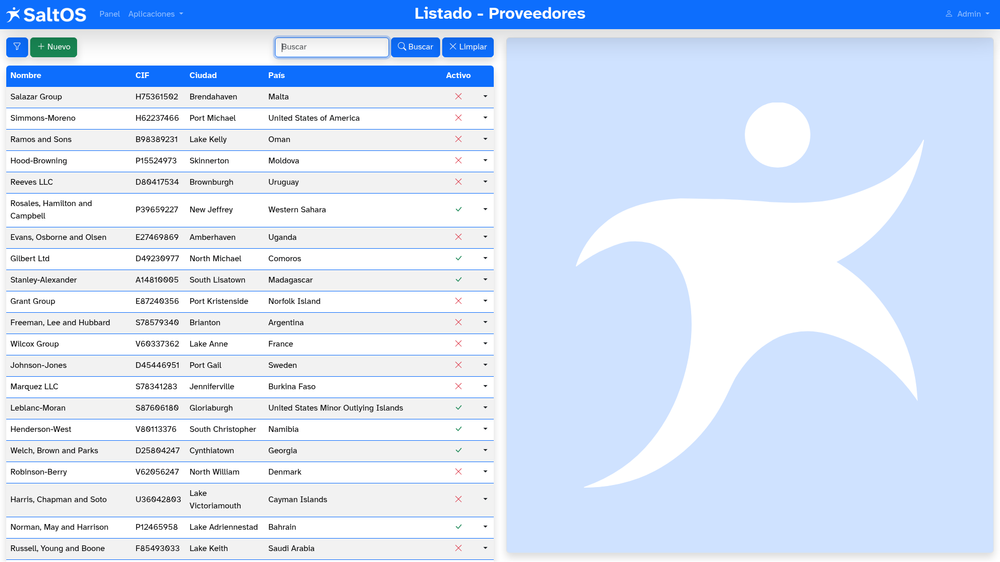
Los siguientes campos se muestran en la vista de lista:
- Nombre: Nombre o razón social del proveedor.
- CIF: Código de identificación fiscal del proveedor (ej: NIF, CIF, IVA).
- Ciudad: Ciudad asociada a la dirección del proveedor.
- País: País donde el proveedor está ubicado o registrado.
- Activo: Indica si el proveedor está actualmente activo en el sistema.
20.3. Vista de formulario
Esta vista se utiliza para crear, editar o consultar registros de proveedores.
En el modo crear, el formulario está vacío para añadir un nuevo proveedor.
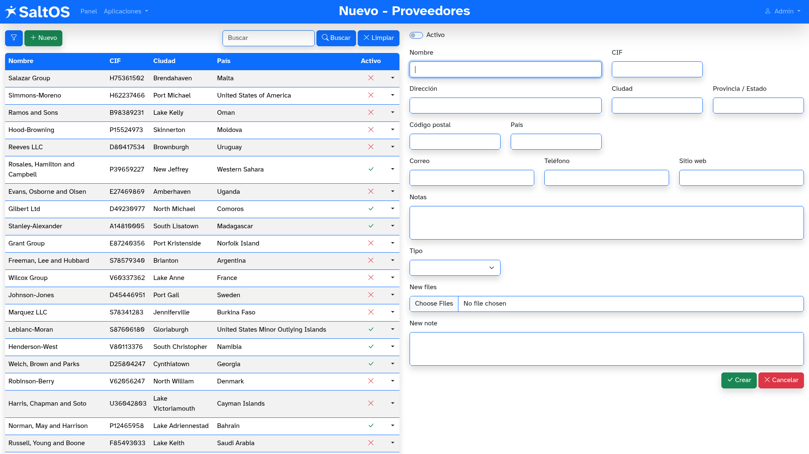
En el modo visualización, los campos se muestran en modo solo lectura.
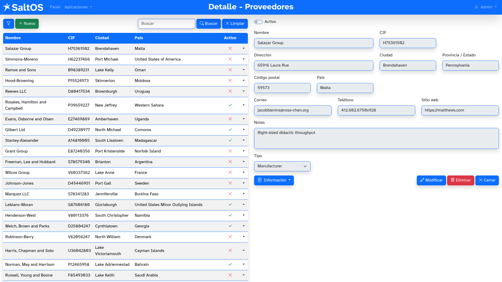
En el modo edición, se pueden actualizar los datos del proveedor.
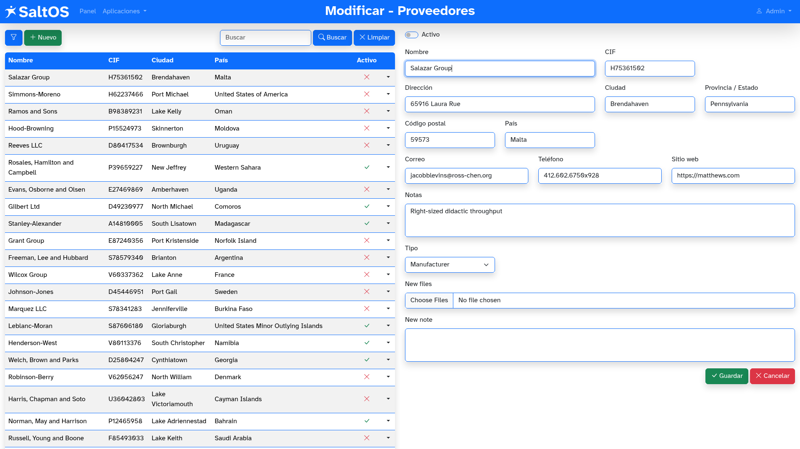
El formulario incluye los siguientes campos:
- Activo: Indica si el proveedor está activo actualmente en el sistema.
- Nombre: Nombre o razón social del proveedor.
- CIF: Código de identificación fiscal del proveedor (ej: NIF, CIF, IVA).
- Dirección: Calle o dirección de facturación del proveedor.
- Ciudad: Ciudad asociada a la dirección.
- Provincia / Estado: Provincia o región administrativa.
- Código postal: Código postal del proveedor.
- País: País donde está ubicado o registrado.
- Correo electrónico: Dirección de correo de contacto principal.
- Teléfono: Número de contacto principal.
- Sitio web: Página web o enlace asociado al proveedor.
- Notas: Información adicional u observaciones internas sobre el proveedor.
- Tipo: Categoría o clasificación del proveedor.
20.4. Eliminación
Los registros de proveedor pueden eliminarse si no están referenciados en compras ni documentos.
Aparecerá un diálogo de confirmación antes de eliminar.
Si el proveedor está vinculado a compras o registros financieros, no podrá eliminarse.
21. Tipos de proveedor
21.1. Descripción
La aplicación de tipos de proveedor se utiliza para clasificar a los proveedores por categoría, sector o tipo de relación. Esta clasificación ayuda a filtrar y organizar a los proveedores, y puede utilizarse para segmentación o fines de informe.
Ejemplos de tipos incluyen "Distribuidor", "Fabricante", "Prestador de servicios", etc.
21.2. Vista de lista
Los siguientes campos se muestran en la vista de lista:
- Nombre: Nombre del tipo de proveedor.
- Descripción: Aclaración opcional o nota interna.
- Activo: Indica si el tipo se puede asignar a proveedores.
21.3. Vista de formulario
Esta vista se utiliza para crear, ver o editar tipos de proveedor.
En el modo crear, se puede definir un nuevo tipo.
En el modo visualización, los detalles del tipo son visibles pero no editables.
En el modo edición, los valores existentes pueden actualizarse.
El formulario incluye los siguientes campos:
- Activo: Habilita o deshabilita la selección del tipo.
- Nombre: Etiqueta descriptiva del tipo.
- Descripción: Información o contexto adicional.
21.4. Eliminación
Los tipos de proveedor solo pueden eliminarse si no están asignados actualmente a ningún proveedor.
Si están en uso, deben desactivarse en lugar de eliminarse.
22. Departamentos
22.1. Descripción
La aplicación de departamentos se utiliza para definir la estructura organizativa de la empresa agrupando empleados en departamentos. Admite jerarquías, permitiendo que un departamento pertenezca a uno superior, y ayuda a organizar usuarios y permisos en consecuencia.
Ejemplos de departamentos pueden incluir "Ventas", "Informática", "RRHH" o "Logística".
22.2. Vista de lista
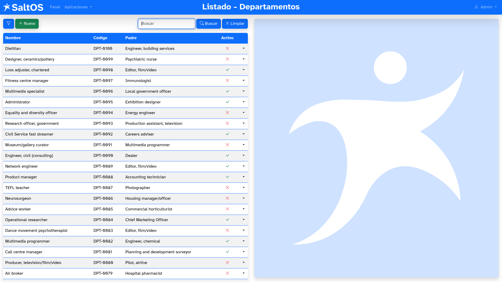
Los siguientes campos se muestran en la vista de lista:
- Nombre: Nombre del departamento o unidad organizativa.
- Código: Identificador único o código de referencia del departamento.
- Padre: Departamento superior, si forma parte de una jerarquía.
- Activo: Indica si este departamento está actualmente en uso.
22.3. Vista de formulario
Esta vista se utiliza para crear, ver o editar departamentos.
En el modo crear, se puede definir un nuevo departamento.
En el modo visualización, los detalles del departamento son visibles pero no editables.

En el modo edición, los valores existentes pueden actualizarse.
El formulario incluye los siguientes campos:
- Activo: Indica si este departamento está en uso.
- Nombre: Nombre del departamento o unidad organizativa.
- Código: Identificador único o código de referencia del departamento.
- Padre: Departamento superior, si forma parte de una jerarquía.
- Notas: Detalles adicionales sobre la estructura, responsabilidad o propósito del departamento.
22.4. Eliminación
Los departamentos solo pueden eliminarse si no hay empleados asignados actualmente.
Si están en uso, se recomienda desactivarlos en lugar de eliminarlos.
23. Empleados
23.1. Descripción
La aplicación de empleados se utiliza para registrar y gestionar el personal que trabaja en la organización. Almacena datos personales y profesionales incluyendo nombre, información de contacto, puesto, departamento y el vínculo con el usuario del sistema. Este módulo se utiliza normalmente en flujos de trabajo de RRHH para organizar al personal y, opcionalmente, asociarlo a usuarios del sistema.
23.2. Vista de lista
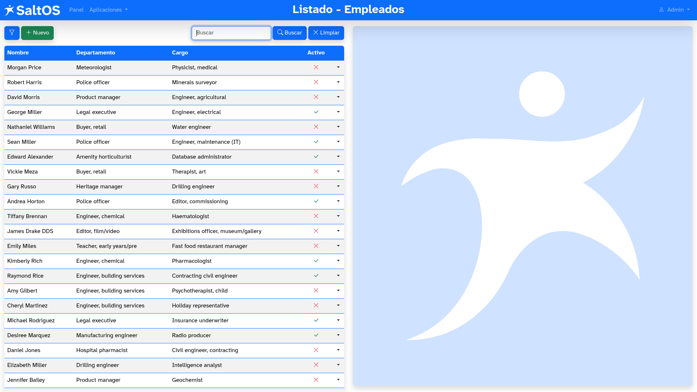
Los siguientes campos se muestran en la vista de lista:
- Nombre: Nombre completo del empleado.
- Departamento: Departamento al que pertenece.
- Cargo: Título oficial del puesto ocupado por el empleado.
- Activo: Indica si el empleado está actualmente activo.
23.3. Vista de formulario
Esta vista se utiliza para crear, consultar o editar fichas de empleados.
En el modo crear, se añade un nuevo perfil de empleado.
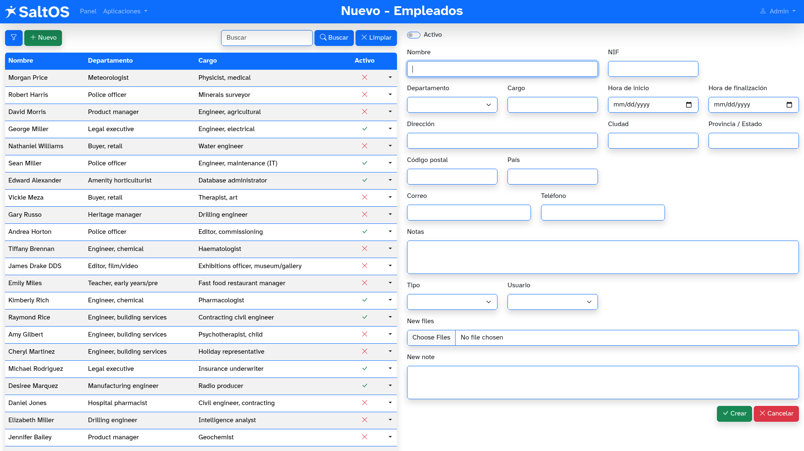
En el modo visualización, el perfil se muestra en formato solo lectura.
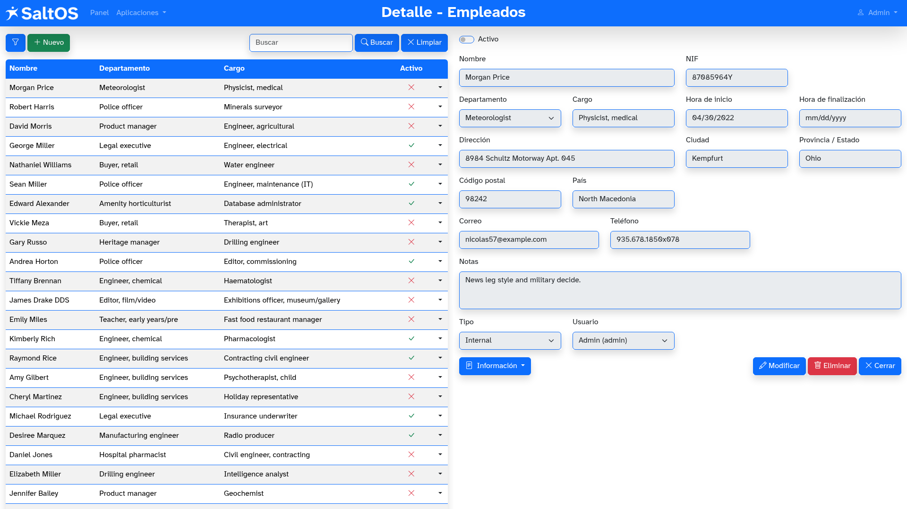
En el modo edición, se puede actualizar el perfil del empleado.
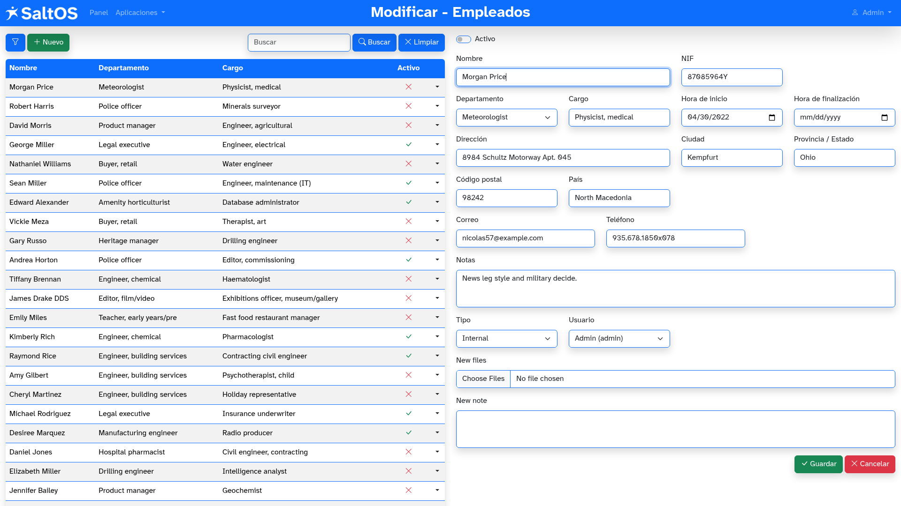
El formulario incluye los siguientes campos:
- Activo: Indica si el empleado está actualmente activo.
- Nombre: Nombre completo del empleado.
- NIF: Número de identificación fiscal del empleado para fines legales o fiscales.
- Departamento: Departamento al que pertenece el empleado.
- Cargo: Título oficial del puesto que ocupa.
- Inicio: Fecha de inicio del empleo o contrato.
- Fin: Fecha de finalización del empleo o contrato (si aplica).
- Dirección: Dirección postal del empleado.
- Ciudad: Ciudad de residencia.
- Provincia / Estado: Provincia o región administrativa de residencia.
- Código postal: Código postal.
- País: País de residencia.
- Correo electrónico: Correo electrónico de contacto principal.
- Teléfono: Teléfono de contacto principal.
- Notas: Observaciones adicionales o anotaciones del área de RRHH.
- Tipo: Tipo o categoría del empleado (ej. jornada completa, externo).
- Usuario: Cuenta de usuario del sistema asociada al empleado.
23.4. Eliminación
Los empleados pueden eliminarse si no están vinculados a usuarios del sistema o a registros históricos.
En caso contrario, debe desactivarse el perfil en lugar de eliminarlo.
24. Tipos de empleado
24.1. Descripción
La aplicación de tipos de empleado permite clasificar a los trabajadores según su rol, tipo de contrato o categoría interna. Esto ayuda a estructurar la base de datos de RRHH y facilita el filtrado, los informes y el control de acceso.
Algunos tipos comunes incluyen "Jornada completa", "Media jornada", "Autónomo", "Prácticas", etc.
24.2. Vista de lista
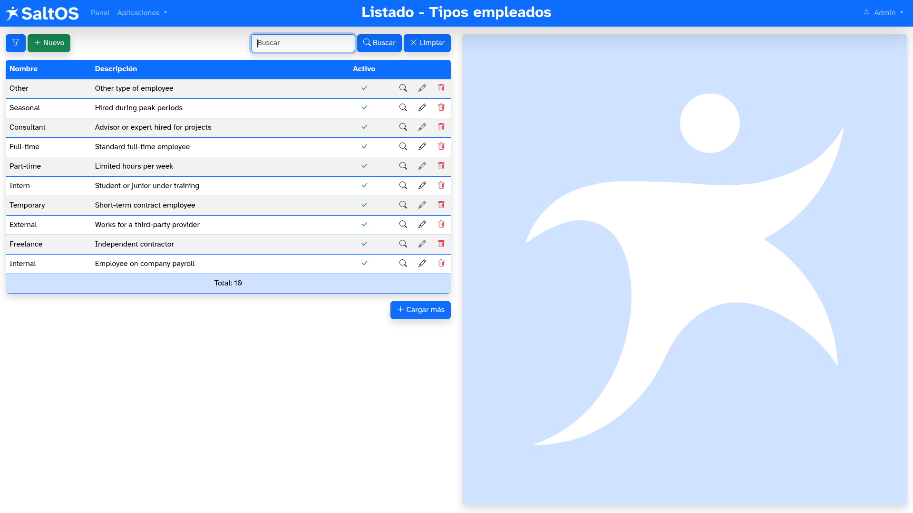
Los siguientes campos se muestran en la vista de lista:
- Nombre: Título del tipo de empleado.
- Descripción: Explicación sobre la finalidad del tipo.
- Activo: Indica si el tipo está actualmente disponible.
24.3. Vista de formulario
Esta vista se utiliza para crear, ver o editar tipos de empleado.
En el modo crear, se puede definir un nuevo tipo de empleado.
En el modo visualización, los detalles son visibles pero no editables.
En el modo edición, se pueden actualizar los valores existentes.
El formulario incluye los siguientes campos:
- Activo: Controla si el tipo se puede seleccionar.
- Nombre: Nombre que aparece en el desplegable de tipos del formulario de empleado.
- Descripción: Notas sobre el uso previsto de este tipo.
24.4. Eliminación
Los tipos de empleado solo pueden eliminarse si no están asignados a ningún empleado.
En caso contrario, se recomienda desactivarlos.
25. Certificados
25.1. Descripción
La aplicación de Certificados se utiliza para gestionar y controlar los certificados SSL/TLS almacenados o monitorizados por el sistema.
Este módulo permite a los administradores registrar certificados, almacenar metadatos, monitorizar fechas de expiración y garantizar que la infraestructura de seguridad se mantenga actualizada.
Es especialmente útil para gestionar certificados de dominios personalizados, servicios internos o integraciones externas.
25.2. Vista de lista
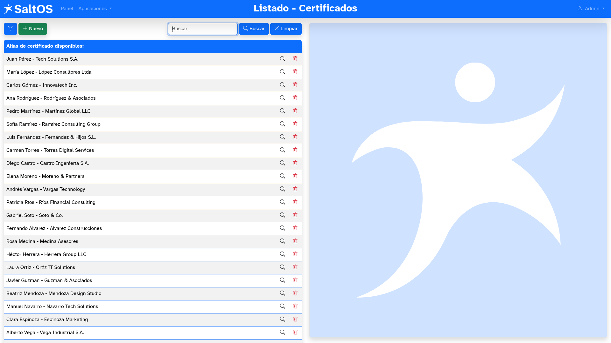
Los siguientes campos se muestran en la vista de lista:
- Alias de certificado disponibles: Lista de alias de certificados ya almacenados y disponibles en el sistema. No es una tabla basada en base de datos, sino una visualización directa de los certificados cargados.
25.3. Vista de formulario
Esta vista se utiliza para añadir, revisar o actualizar la información de un certificado.
En modo creación, el formulario está vacío y listo para introducir nuevos datos.
El formulario incluye los siguientes campos:
- Archivo de certificado (.p12, .pfx): Campo de subida utilizado para cargar uno o más certificados en formato PKCS#12. Es obligatorio para importar certificados al sistema.
- Contraseña del archivo: Contraseña utilizada para descifrar el archivo de certificado cargado. Este campo es obligatorio y no se autocompleta por razones de seguridad.
En modo vista, los campos están rellenos con el registro seleccionado y no se pueden editar.
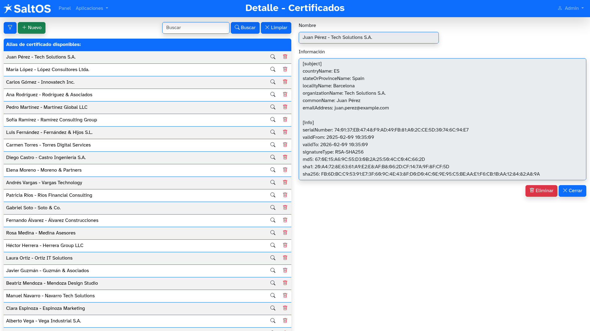
El formulario incluye los siguientes campos:
- Nombre: Nombre visible o alias del certificado.
- Información: Detalles técnicos del certificado, incluyendo emisor, expiración y sujeto. Mostrado en un área de texto de solo lectura.
25.4. Eliminar
Los certificados pueden eliminarse si ya no son relevantes.
Sin embargo, se recomienda conservar las entradas expiradas con fines de auditoría.
26. Empresa
26.1. Descripción
La aplicación de empresa almacena los datos de identificación y contacto de la organización que utiliza SaltOS4. Esta información se utiliza en todo el sistema para personalizar documentos (presupuestos, facturas, correos, etc.) y definir la identidad legal y fiscal de la empresa.
Normalmente incluye el nombre de la empresa, su código fiscal, dirección, logotipo e idioma preferido.
26.2. Vista de lista
Los siguientes campos se muestran en la vista de lista:
- Nombre: Nombre oficial de la empresa u organización.
- CIF: Código de identificación fiscal (NIF, CIF, IVA, etc.) de la empresa.
- Ciudad: Ciudad donde se encuentra la empresa.
- País: País donde la empresa está legalmente registrada o donde opera.
- Activa: Indica si este perfil de empresa está activo en el sistema.
26.3. Vista de formulario
Esta vista se utiliza para definir o editar el perfil de la empresa.
En el modo crear, el formulario está vacío y listo para ingresar los datos.
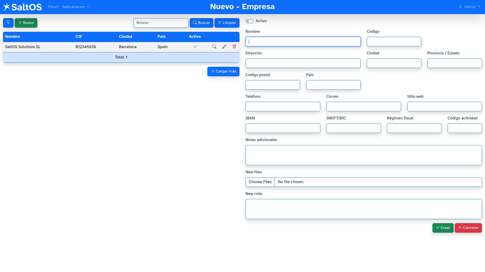
En el modo visualización, los campos se muestran rellenos pero no se pueden editar.
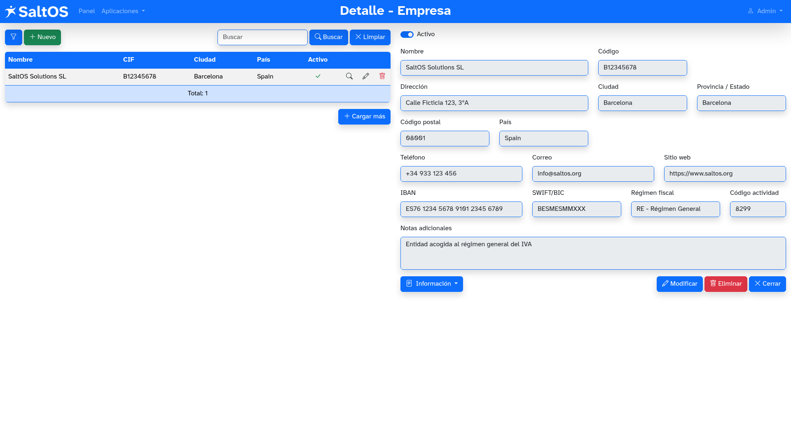
En el modo edición, el formulario está precargado y permite realizar modificaciones.
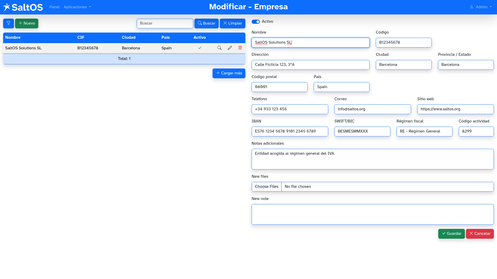
El formulario incluye los siguientes campos:
- Activa: Indica si este perfil de empresa está activo en el sistema.
- Nombre: Nombre oficial de la empresa u organización.
- Código: Código fiscal (NIF, CIF, IVA, etc.) de la empresa.
- Dirección: Dirección oficial o postal de la empresa.
- Ciudad: Ciudad donde se encuentra la empresa.
- Provincia / Estado: Provincia, estado o región donde tiene sede la empresa.
- Código postal: Código postal de la dirección registrada.
- País: País donde la empresa está registrada u opera.
- Teléfono: Número de teléfono principal de contacto.
- Correo electrónico: Dirección de correo electrónico utilizada para contacto administrativo o legal.
- Sitio web: Página web pública de la empresa.
- IBAN: Número de cuenta bancaria internacional para transferencias.
- SWIFT/BIC: Código SWIFT/BIC que identifica el banco de la empresa en transferencias internacionales.
- Régimen fiscal: Régimen tributario bajo el cual opera la empresa (ej: general, simplificado, pymes).
- Código de actividad: Código de clasificación económica (ej: CNAE, NACE).
- Notas adicionales: Observaciones internas o información adicional sobre la empresa.
26.4. Eliminación
El perfil de empresa no puede eliminarse si es el único activo en el sistema.
En la mayoría de configuraciones, solo se permite su desactivación.
27. Correos electrónicos
27.1. Descripción
La aplicación de correos electrónicos se utiliza para recibir, consultar y responder correos desde las cuentas configuradas en SaltOS4. Actúa como un cliente de correo integrado simplificado que permite leer mensajes mediante POP3 o IMAP, ver metadatos y contenido, y responder utilizando servidores SMTP internos o externos.
Cada mensaje se muestra como una tarjeta visual en la vista de lista, con campos clave como remitente, asunto, fecha y un fragmento del cuerpo. Los correos pueden visualizarse en detalle, responderse o eliminarse. Esta aplicación está estrechamente integrada con el módulo de Cuentas de correo electrónico y es esencial para gestionar la comunicación entrante.
27.2. Vista de lista
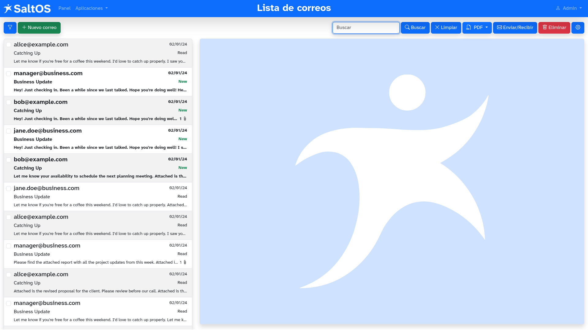
La vista de lista muestra los correos entrantes como botones o tarjetas clicables. Cada entrada muestra normalmente:
- Encabezado: Resumen visual que representa el mensaje en la interfaz.
- Fecha y hora: Momento en que se recibió o envió el mensaje.
- Asunto: Título o línea de asunto del correo.
- Fragmento: Vista previa extraída del inicio del cuerpo del mensaje.
- Adjuntos: Lista de archivos adjuntos, con opción de descarga.
La interfaz también incluye filtros y un formulario de búsqueda por remitente, asunto, cuenta y fecha.
27.3. Vista del mensaje
Esta vista muestra el contenido completo del mensaje, incluyendo metadatos y archivos adjuntos.
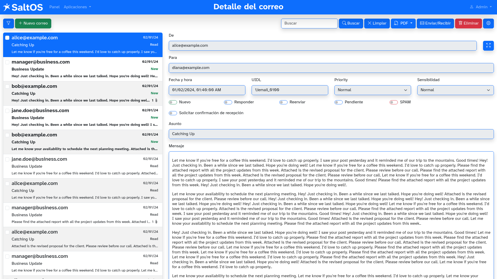
La información mostrada incluye:
- De: Dirección del remitente.
- Para: Destinatarios principales.
- CC: Destinatarios con copia visible.
- CCO: Destinatarios con copia oculta.
- Fecha y hora: Momento en que se envió o recibió el mensaje.
- UIDL: Identificador único del servidor para sincronización.
- Prioridad: Nivel de importancia (Baja, Normal, Alta).
- Sensibilidad: Nivel de confidencialidad: Normal, Personal, Privado o Confidencial.
- Enviado: Confirma que el correo fue enviado con éxito.
- Nuevo: Indica si el mensaje es nuevo o no leído.
- Respuesta: Indica si se ha respondido el mensaje.
- Reenviado: Indica si el mensaje fue reenviado.
- Espera: Marcador de seguimiento o espera de respuesta.
- SPAM: Indica si se clasificó como correo no deseado.
- Solicitar confirmación de lectura: Muestra si se pidió acuse de recibo.
- Error: Muestra un error si falló el envío.
- Asunto: Línea de asunto del mensaje.
- Cuerpo: Contenido principal del mensaje, en visor embebido.
- Adjuntos: Archivos adjuntos del mensaje.
27.4. Responder / Redactar
Los usuarios pueden responder a un mensaje existente o redactar uno nuevo desde un formulario simplificado.
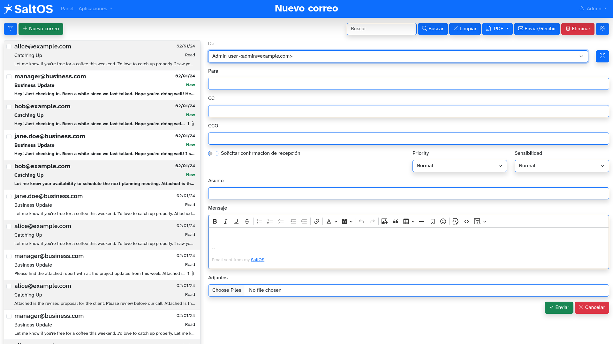
El formulario de respuesta o redacción incluye:
- Desde: Cuenta de correo usada como remitente.
- Para: Destinatarios principales.
- CC: Destinatarios con copia visible.
- CCO: Destinatarios con copia oculta.
- Solicitar confirmación de lectura: Opción para solicitar acuse de recibo.
- Prioridad: Nivel de importancia: Baja, Normal o Alta.
- Sensibilidad: Nivel de confidencialidad: Normal, Personal, Privado o Confidencial.
- Asunto: Título o asunto del mensaje.
- Cuerpo: Texto enriquecido redactado en el mensaje.
- Adjuntos: Archivos seleccionados para enviar junto al mensaje.
27.5. Eliminación
Los correos pueden eliminarse desde la vista de lista mediante el icono o acción correspondiente.
Los mensajes se eliminan localmente o se marcan para eliminación, según la configuración del servidor.
27.6. Generación de PDF
Desde la vista individual de un registro (view), el usuario puede generar y descargar un PDF con todos los datos relevantes de ese registro.
Desde la vista de listado (list), es posible seleccionar varios registros mediante los checkboxes y generar un único PDF que los incluya todos.
27.7. Widget en el dashboard
La aplicación de correos electrónicos (`emails`) publica un widget en el panel principal (dashboard) que muestra una lista compacta con los 5 últimos correos electrónicos recibidos.
Este widget permite al usuario consultar rápidamente los mensajes más recientes sin necesidad de acceder a la aplicación completa, mejorando la visibilidad de la actividad reciente y facilitando el acceso directo a cada correo.
28. Cuentas de correo electrónico
28.1. Descripción
La aplicación de cuentas de correo electrónico se utiliza para configurar y gestionar las cuentas vinculadas a SaltOS4. Cada cuenta puede utilizarse para enviar y recibir correos mediante protocolos SMTP, IMAP o POP3. Este módulo permite la integración con proveedores externos y admite autenticación, carpetas y opciones de sincronización.
28.2. Vista de lista
Los siguientes campos se muestran en la vista de lista:
- Usuario: Persona que es propietaria o utiliza esta cuenta de correo.
- Nombre: Etiqueta descriptiva para identificar la cuenta dentro del sistema.
- Correo electrónico: Dirección de correo configurada para esta cuenta.
- Activo: Indica si la cuenta está habilitada y se sincroniza.
28.3. Vista de formulario
Esta vista se utiliza para crear, ver o editar una cuenta de correo.
En el modo crear, se configura una cuenta nueva desde cero.
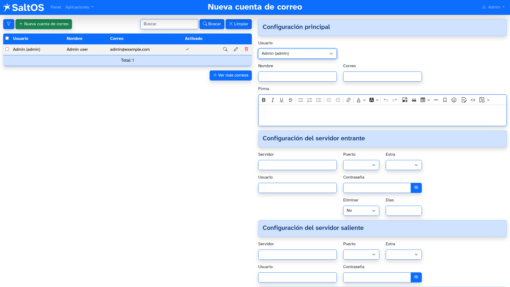
En el modo visualización, se muestran los datos de la cuenta pero no se pueden modificar.
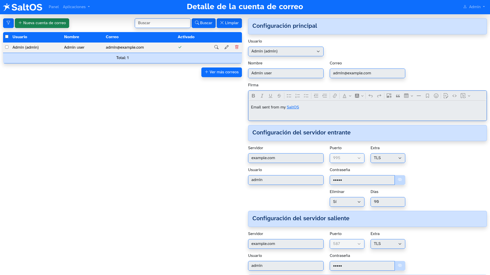
En el modo edición, se pueden corregir o actualizar los parámetros.
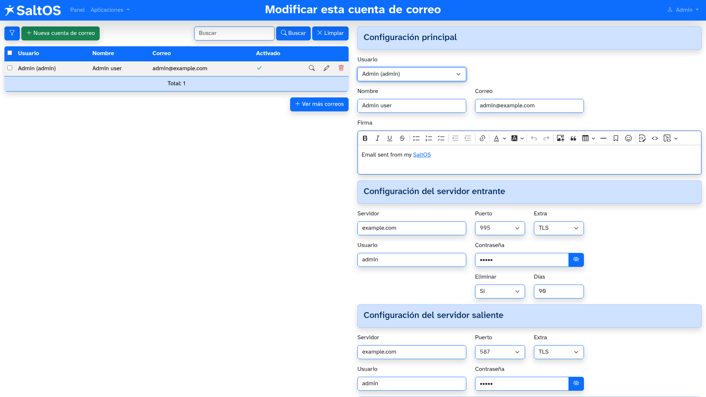
El formulario incluye los siguientes campos:
- Usuario: Persona propietaria de la cuenta.
- Nombre: Nombre visible o etiqueta para identificar la cuenta.
- Correo electrónico: Dirección asociada a la cuenta.
- Firma: Texto o firma HTML añadida automáticamente a los mensajes salientes.
- Servidor POP3: Nombre del servidor para recibir correos.
- Puerto POP3: Puerto usado para conectarse (ej: 110, 995).
- Opciones POP3: Ajustes adicionales (TLS, etc.).
- Usuario POP3: Usuario para autenticar la cuenta POP3.
- Contraseña POP3: Clave de la cuenta POP3.
- Borrar: Si se deben eliminar los mensajes tras descargarlos.
- Días: Número de días que los correos permanecen en el servidor.
- Servidor SMTP: Nombre del servidor para enviar correos.
- Puerto SMTP: Puerto usado para enviar (ej: 25, 465, 587).
- Cifrado SMTP: Tipo de conexión: ninguno, SSL o TLS.
- Usuario SMTP: Usuario para autenticarse en SMTP.
- Contraseña SMTP: Clave de la cuenta SMTP.
- Inactivo: Marca la cuenta como deshabilitada (no se sincroniza).
- Privado: Restringe el acceso solo al propietario.
- Por defecto: Marca esta cuenta como remitente por defecto.
- Añadirme al CC: Añade automáticamente al remitente como copia.
- Solicitar confirmación de lectura: Activa acuse de recibo en cada envío.
28.4. Eliminación
Las cuentas pueden eliminarse si no están activas ni vinculadas a actividad reciente.
Se recomienda desactivarlas si se desea conservar la configuración para uso futuro o auditoría.
29. Grupos
29.1. Descripción
La aplicación de grupos se utiliza para definir roles o categorías de usuarios dentro de SaltOS4. Cada grupo agrupa permisos que determinan qué pueden ver o hacer sus miembros en el sistema. Los grupos simplifican la administración del control de acceso al permitir gestionar los permisos a nivel de grupo en lugar de usuario por usuario.
29.2. Vista de lista
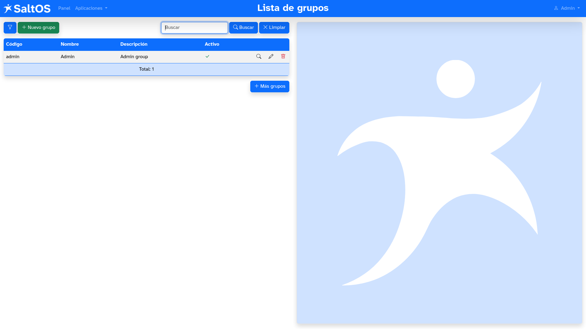
Los siguientes campos se muestran en la vista de lista:
- Código: Identificador interno o código de referencia del grupo.
- Nombre: Nombre o título usado para identificar el grupo.
- Descripción: Explicación de la finalidad o alcance del grupo.
- Activo: Indica si este grupo está habilitado para su uso.
29.3. Vista de formulario
Esta vista se utiliza para crear, ver o editar grupos de usuarios.
En el modo crear, se define un nuevo grupo.
En el modo visualización, se muestran los detalles del grupo y los permisos asignados.
En el modo edición, se puede actualizar el nombre, la descripción y la matriz de permisos.
El formulario incluye los siguientes campos:
- Activo: Indica si el grupo está habilitado para su uso.
- Código: Identificador interno o referencia del grupo.
- Nombre: Título o nombre que identifica al grupo.
- Descripción: Explicación de su propósito o alcance funcional.
- Usuarios: Lista de usuarios asignados a este grupo.
- Aplicaciones y permisos: Matriz de accesos y operaciones permitidas a este grupo.
29.4. Eliminación
Los grupos solo pueden eliminarse si no tienen usuarios asignados.
Si el grupo está en uso, se recomienda desactivarlo para conservar el historial de accesos.
30. Usuarios
30.1. Descripción
La aplicación de usuarios se utiliza para gestionar las cuentas que tienen acceso al sistema SaltOS4. Cada usuario tiene asignadas credenciales, roles y permisos, y puede estar vinculado opcionalmente a un perfil de empleado. Este módulo es esencial para el control de acceso, la personalización y la trazabilidad mediante auditoría.
30.2. Vista de lista
Los siguientes campos se muestran en la vista de lista:
- Usuario: Nombre de usuario único utilizado para acceder al sistema.
- Nombre: Nombre completo del usuario, usado para identificación y visualización.
- Descripción: Comentarios internos o notas sobre el perfil del usuario.
- Grupo: Grupo o rol asignado para control de permisos.
- Activo: Indica si la cuenta está actualmente habilitada.
30.3. Vista de formulario
Esta vista se utiliza para crear, ver o editar cuentas de usuario.
En el modo crear, el formulario permite registrar un nuevo usuario con credenciales de acceso.
En el modo visualización, los datos del usuario se muestran sin opción de edición.
En el modo edición, se puede actualizar la información o restablecer credenciales.
El formulario incluye los siguientes campos:
- Activo: Indica si la cuenta de usuario está actualmente habilitada.
- Usuario: Nombre único de acceso al sistema.
- Grupo: Grupo o rol que define los permisos base.
- Nombre: Nombre completo del usuario.
- Nueva contraseña: Clave de acceso nueva (para restablecimiento o cambio).
- Repetir contraseña: Confirmación de la nueva contraseña.
- Descripción: Notas internas sobre el perfil del usuario.
- Inicio: Fecha desde la cual la cuenta es válida.
- Fin: Fecha de expiración tras la cual no se permite el acceso.
- Días: Días de la semana en los que se permite acceso.
- Grupos: Grupos adicionales asociados al usuario.
- Aplicaciones y permisos: Matriz detallada de accesos y acciones permitidas.
- Historial de contraseñas: Lista de contraseñas anteriores para control y seguridad.
30.4. Eliminación
Las cuentas de usuario pueden eliminarse si no han iniciado sesión y no están vinculadas a registros de actividad.
En caso contrario, se recomienda desactivarlas en lugar de eliminarlas para mantener trazabilidad.
31. Registro de configuración
31.1. Descripción
La aplicación de registro de configuración proporciona una trazabilidad de todos los cambios de configuración realizados en SaltOS4. Se utiliza para supervisar modificaciones en parámetros del sistema, configuraciones de aplicaciones o preferencias internas. Este módulo es esencial para los administradores que desean auditar cambios y garantizar un comportamiento consistente del sistema a lo largo del tiempo.
31.2. Vista de lista
Los siguientes campos se muestran en la vista de lista:
- Usuario: Usuario que realizó el cambio de configuración.
- Clave: Clave de configuración que fue modificada.
31.3. Vista de registro
Esta vista muestra los detalles completos de un registro de cambio de configuración.
En el modo crear, el formulario está vacío y listo para introducir nuevos datos.
En el modo visualización, los campos están rellenos con la información del registro seleccionado y no pueden editarse.
En el modo edición, el formulario se muestra con los datos existentes y permite modificaciones.
Incluye:
- Usuario: Usuario que realizó el cambio de configuración.
- Clave: Clave de configuración modificada.
- Valor: Nuevo valor asignado a la clave de configuración.
31.4. Eliminación
Las entradas del registro de configuración no pueden eliminarse en condiciones normales.
Este registro está diseñado para garantizar la trazabilidad total y la auditabilidad de las acciones administrativas.
32. Registro de cron
32.1. Descripción
La aplicación de registro de cron almacena el historial de ejecución de tareas programadas (cron jobs) dentro de SaltOS4. Permite a los administradores supervisar procesos en segundo plano como la recogida de correos, importaciones de datos, copias de seguridad o tareas personalizadas. Este módulo es esencial para la detección de errores y para verificar que las operaciones programadas se estén ejecutando correctamente.
32.2. Vista de lista
Los siguientes campos se muestran en la vista de lista:
- Comando: Comando o script ejecutado por el sistema de cron.
- Inicio: Hora de inicio de la ejecución de la tarea programada.
- Salida: Vista previa del resultado de salida estándar.
- Error: Vista previa del resultado de salida de error (si lo hay).
32.3. Vista de registro
Esta vista muestra el resultado completo de una ejecución de tarea cron individual.
Incluye:
- Comando: Comando o script ejecutado por cron.
- PID: Identificador de proceso asignado a la tarea.
- Inicio: Hora de inicio de la tarea.
- Fin: Hora en que terminó la ejecución.
- STDOUT: Salida estándar generada durante la ejecución.
- STDERR: Salida de error generada durante la ejecución (si existe).
32.4. Eliminación
Las entradas del registro de cron no están pensadas para ser eliminadas con regularidad.
Se puede configurar una limpieza automática o una purga manual para eliminar entradas antiguas.
33. Registro de archivos
33.1. Descripción
La aplicación de registro de archivos registra todos los eventos de acceso a archivos dentro de SaltOS4. Rastrea cuándo los archivos son visualizados, descargados o accedidos por los usuarios, incluyendo los metadatos asociados. Este módulo proporciona una trazabilidad completa de la actividad documental, respaldando políticas de gobernanza y seguridad de datos.
33.2. Vista de lista
Los siguientes campos se muestran en la vista de lista:
- Nombre: Nombre del archivo accedido o gestionado dentro del sistema.
- Tipo: Formato o clasificación del archivo (ej: PDF, imagen, texto).
- Tamaño: Tamaño del archivo en bytes.
33.3. Vista del registro
Esta vista muestra información detallada sobre un evento de acceso a archivo.
Incluye:
- Nombre: Nombre del archivo accedido o gestionado dentro del sistema.
- Tipo: Formato o clasificación del archivo (ej: PDF, imagen, texto).
- Tamaño: Tamaño del archivo en bytes.
- Datos: Contenido interno, metadatos o estructura serializada que representa el acceso o acción sobre el archivo.
33.4. Eliminación
Las entradas del registro de archivos generalmente no se eliminan de forma manual.
Se conservan por motivos de auditoría y control de seguridad, y pueden depurarse automáticamente según la configuración del sistema.
34. Registro de notificaciones push
34.1. Descripción
La aplicación de registro de notificaciones push almacena todas las notificaciones enviadas por el sistema. Estas notificaciones se utilizan normalmente para alertar a los usuarios sobre acciones, actualizaciones o eventos del sistema en tiempo real. Este módulo permite a los administradores monitorizar el flujo de notificaciones y diagnosticar posibles problemas en el proceso de entrega.
34.2. Vista de lista
Los siguientes campos se muestran en la vista de lista:
- Usuario: Usuario que generó o recibió la notificación push.
- Fecha y hora: Momento en que se registró la notificación.
- Tipo: Categoría del mensaje push (ej: información, advertencia, error).
34.3. Vista de registro
Esta vista muestra los detalles completos de una única notificación push.
Incluye:
- Usuario: Usuario que generó o recibió la notificación.
- Fecha y hora: Fecha y hora en que se registró la notificación.
- Tipo: Categoría del mensaje push (ej: información, advertencia, error).
- Mensaje: Contenido o resumen del mensaje enviado.
- Marca temporal: Timestamp interno del sistema al registrar el evento.
34.4. Eliminación
Las entradas del registro de notificaciones push normalmente no se eliminan y se conservan para fines de auditoría.
En escenarios de mantenimiento específicos, los registros antiguos pueden ser depurados, pero esto requiere permisos explícitos.
35. Registro de tokens
35.1. Descripción
La aplicación de registro de tokens hace seguimiento del uso de los tokens de autenticación en todo el sistema. Estos tokens se utilizan normalmente en llamadas a la API, scripts automatizados o sesiones de acceso temporal. Este módulo permite a los administradores monitorizar el acceso al sistema y detectar posibles usos indebidos o intentos no autorizados.
35.2. Vista de lista
Los siguientes campos se muestran en la vista de lista:
- Usuario: Usuario asociado al token.
- Creado: Fecha y hora en que se creó el token.
- Token: Cadena de token utilizada para autenticación o acceso.
- Activo: Indica si el token es actualmente válido y utilizable.
35.3. Vista de registro
Esta vista muestra toda la información relacionada con un acceso mediante token.
Incluye:
- Activo: Indica si el token es actualmente válido y utilizable.
- Usuario: Usuario asociado al token.
- Creado: Fecha y hora en que se creó el token.
- Actualizado: Fecha y hora de la última modificación del estado del token.
- Dirección IP: Dirección desde la cual se utilizó o generó el token.
- User Agent: Navegador o cliente usado para generar o acceder al token.
- Token: Cadena usada para autenticación o acceso.
- Expira: Fecha y hora de expiración del token, tras la cual deja de ser válido.
35.4. Eliminación
Las entradas del registro de tokens no están pensadas para ser eliminadas manualmente.
Forman parte del historial de auditoría y control de accesos del sistema, y pueden eliminarse automáticamente si está configurado.
36. Registro de papelera
36.1. Descripción
La aplicación de registro de papelera almacena todas las eliminaciones realizadas en el sistema, actuando como una papelera de reciclaje para SaltOS4. Permite a administradores y usuarios avanzados inspeccionar qué datos han sido eliminados, cuándo, por quién y desde dónde. Este módulo es clave para la trazabilidad y ayuda a identificar eliminaciones accidentales o acciones no autorizadas.
36.2. Vista de lista
Los siguientes campos se muestran en la vista de lista:
- Usuario: Usuario que realizó la eliminación.
- Fecha y hora: Momento exacto en que se eliminó el registro.
- Nombre: Nombre descriptivo del registro o archivo eliminado.
36.3. Vista de registro
Esta vista muestra toda la información registrada sobre un elemento eliminado.
Incluye:
- ID antiguo: Identificador original del registro antes de su eliminación.
- Usuario: Usuario que realizó la eliminación.
- Fecha y hora: Momento exacto en que se eliminó.
- ID de registro: Identificador interno asignado al registro eliminado.
- Aplicación: Aplicación o módulo desde donde se eliminó el registro.
- ID único: Identificador único en todo el sistema del elemento eliminado.
- Nombre: Nombre descriptivo del registro o archivo eliminado.
- Tamaño: Tamaño del archivo en bytes, si el elemento era un archivo.
- Tipo: Tipo MIME o clasificación del elemento eliminado.
- Archivo: Nombre o ruta original del archivo eliminado.
- Hash: Suma de verificación utilizada para validar el contenido eliminado.
36.4. Eliminación
Las entradas del registro de papelera no pueden eliminarse directamente desde la interfaz.
SaltOS4 las conserva para fines de responsabilidad y trazabilidad legal, a menos que se configure una depuración automática.
37. Registro de subidas
37.1. Descripción
La aplicación de registro de subidas registra todos los archivos cargados a través de SaltOS4, ya sea de forma manual o automatizada. Ayuda a rastrear el origen, el usuario y el contexto de cada carga, y resulta útil para auditorías, depuración y para verificar que las subidas se procesan correctamente.
37.2. Vista de lista
Los siguientes campos se muestran en la vista de lista:
- Usuario: Usuario que subió el archivo.
- Fecha y hora: Momento en que el archivo fue subido al sistema.
- Aplicación: Módulo o aplicación desde la cual se activó la subida.
- Nombre: Nombre original del archivo proporcionado por el usuario.
37.3. Vista de registro
Esta vista muestra los detalles completos de una entrada del registro de subidas.
Incluye:
- Usuario: Usuario que subió el archivo.
- Fecha y hora: Momento en que el archivo fue subido al sistema.
- ID único: Identificador único interno asignado a la entrada de subida.
- Aplicación: Módulo o aplicación desde donde se originó la subida.
- Nombre: Nombre original del archivo proporcionado por el usuario.
- Tamaño: Tamaño del archivo subido en bytes.
- Tipo: Tipo MIME o formato del archivo.
- Archivo: Nombre del archivo almacenado utilizado internamente por el sistema.
- Hash: Suma de verificación (ej: MD5 o SHA) para validar la integridad o detectar duplicados.
37.4. Eliminación
Las entradas del registro de subidas normalmente se conservan con fines de trazabilidad histórica.
Si es necesario, se pueden eliminar entradas antiguas manualmente o mediante tareas de mantenimiento automático.